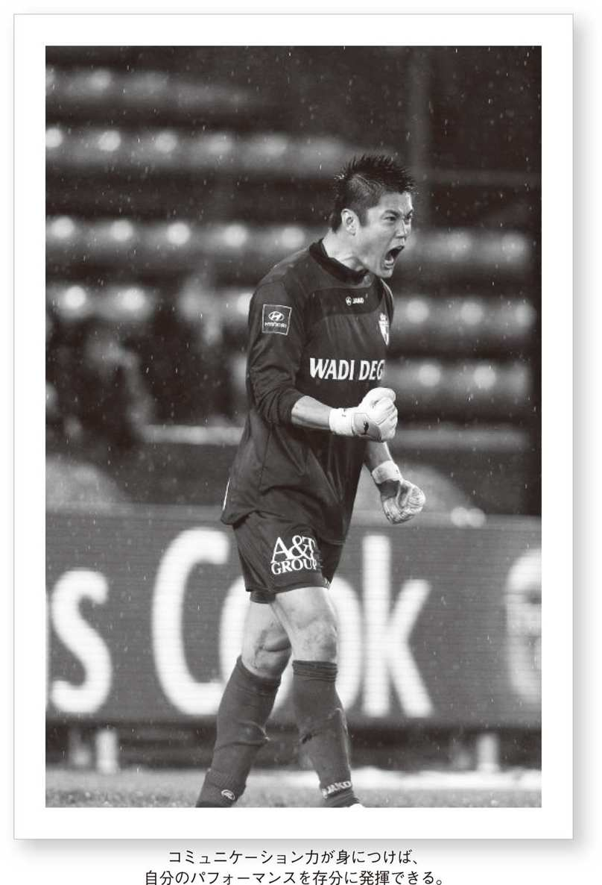

| 本当に「英語を話したい」キミへ | |
| 川島 永嗣 | |
| (2013) | |
この本は横書きでレイアウトされています。また、ご覧になる機種により、表示の差が認められることがあります。
本当に「英語を話したい」キミへ
川島永嗣

CONTENTS
言葉を話せることでより生活が楽しくなる
僕は英語ができなかった
色々な学習法にトライ、
試行錯誤の日々
英語をわかり始め、
よりステップアップへ
海外移籍。英語力もアップ、
他言語もマスターへ
語学を通して新たな世界と出逢う
はじめに
言葉を話せることでより生活が楽しくなる
2010年、南アフリカでのW杯の後にベルギー1部リーグ、リールセSKに移籍して早2年。ヨーロッパでの挑戦は今年で3シーズン目となります。2年間プレーしたリールセを離れ、約120キロ離れたベルギーで5番目に大きな都市リエージュにある名門クラブ、スタンダール・リエージュで新たな挑戦をしています。昔から憧れていた海外に住むようになってから早いもので3年目。これまで、日本では体感できないさまざまな経験をしてきました。
中学校3年生の時に初めて、県の選抜の遠征でドイツ、オランダを訪れ、日本の外にもこんなに素晴らしい景色があるんだとヨーロッパの綺麗な街並みに目を奪われ、18歳の時に1か月間留学したイタリアのパルマで、今まで感じたことのなかった日本以外の文化や考え方に触れ、僕の海外でプレーしたいという夢は大きくふくらんでいきました。
皆さんの抱く僕のイメージは、もしかしたら、さまざまな言語が話せてもともと語学の才能があるとか、いつも自分の夢や目標に向かって着実に努力しているという見方もあるのかもしれません。でも僕自身振り返ってみると、実は何度となく、自分は語学には向いていないのではないか、と思わされる苦い経験がたくさんあったし、今でももっとこんな風に話ができたらいいなとか、違う表現の仕方があるんじゃないかと日々葛藤しています。
僕が語学に興味を持ったのは、小さい頃にレンタルビデオショップで借りてきた、海外の映画です。映画の主役が自分のまったくわからない英語をペラペラと楽しそうに話すのを見て、何だかカッコイイ!!という単純な理由でした。英語を話せるのって何かかっこいいな、ということがきっかけになりました。初めて英語に触れた中学校の英語の授業では、あの映画の主役みたいに流暢に英語を話せるようになるぞ!!という小さな夢を抱き、友達には「ただのサッカーばかでいい」と言っていた当時、好きではなかった勉強も英語だけはやる気が違いました。
そんな野望を抱いた僕を早速襲ったのは、「話せない」という現実。いくら勉強を頑張っても、夏休みの間に塾で勉強してきたクラスメイトが、ペラペラと外国人の教師と話すのを見て、なんで自分もこんなに頑張って勉強しているのに話せるようにならないのだろうか、なんでこんなに勉強しているのに何を言っているのかさっぱりわからないのだろうか、という思いがどんどんふくらんでいきました。それと同時に僕の中のあの海外映画の主人公は、どんどん色褪せていくばかり。
初めて留学したイタリアでは、言葉がまったく通じないという現実の前に立たされました。車で3時間、当時の留学や練習参加をアレンジしてくれていたイタリア人の代理人に、いくら勉強したイタリア語で話しかけても通じない。終始無言でひたすら過ぎゆくヨーロッパの景色を見つめながら、誰も自分のことを知らない、友達もいない、話そうとしても通じないという環境に置かれたことで、それまで感じたことのない孤独感、「自分は今ここに存在しているのか」という思いが身体中に込み上げ、すぐに国際電話で母親に電話をかけて、心配をかけないように普通を装いながらも、母親の声を聞いた瞬間、安堵で涙が溢れたことを今でも鮮明に覚えています。
海外に住むようになって3年目。今ではたくさんの日本人選手がヨーロッパでプレーしています。海外に住むようになって、選手だけではなく、仕事で海外に住む日本人の方々、旅行で通り過ぎていく日本人の方々を実際に目の当たりにして、今、僕は改めて「言葉」の重要性を感じています。
中には言葉なんて話せなくても何とかなると思う人もいるでしょうし、外国語なんて絶対話せるようにならないから、しゃべらずに自分の世界を貫こうという方もいると思います。もちろん自分には才能がないから最初から諦めるという人も。でも、僕がこの2年間で感じたのは、言葉を話せることでより生活が楽しくなるということです。
いくら勉強してもなかなか通じなくて、ひとつでも言葉が通じた時のあのうれしさ。自分を表現できた喜びと、相手と理解し合うことができる楽しさ。相手の言っていることを理解するだけでなく、自分の考えていることをはっきりと伝えることができた時のあの達成感。
僕は英語がまったく話せない頃、英語で外国人とコミュニケーションが取れているのに、謙遜して「いや～、全然話せないよ～」という人を見て、全然話せてるじゃないか!!と嫉妬し、いつか自分が話せるようになったら、「うん、話せるよ!!」と自信を持って言ってやろうと思っていました。僕は皆さんが思うように何か国語も完璧に話せるわけではありません。でも、興味を持っていろんな言葉を勉強していたことで、それが実際に海外に出てこんな形で役に立つとは思ってもいませんでした。
この本では、語学を勉強したいけど、なかなかきっかけをつかめない人、いつか海外に住んでみたいという人、日本にいて海外から来たたくさんの人たちに日本の良さを伝えたい人、昔の僕のように話せる人を見て嫉妬している人（笑）。そんな皆さんのきっかけに少しでもなればいいかなと思います。
僕が語学を勉強し続ける中で味わった挫折や苦い経験、どうやってそれを乗り越えて勉強し続けているのかを、皆さんの経験と照らし合わせて読んでもらえたらうれしいです。

英才教育には縁がなかった
I did not take any special English lessons at the beginning.
僕は語学が好きでずっと勉強してきました。といっても、幼い頃から何か特別な教育を受けたわけでも、英語に囲まれた環境で育ったわけでもありません。両親と兄、姉とのごく一般的な日本の家庭に育って、小学校、中学校、高校と公立に進みました。家族の誰かが英語に興味があったとか、家庭に英語の音楽が流れているとか、そういうこともなかったですし、両親が子どもたちに幼い頃から英語を学ばせようとすることもまったくありませんでした。
ですから、英語に出合ったのも、中学生になってからです。幼稚園に上がるか上がらないかの頃から英会話教室に通ったり、インターナショナルスクールなどに進学したりする子どもたちも決して珍しくないこの頃、そういった人たちに比べたら、
僕のスタートは決して早いとは言えない
ものでした。その僕が、なぜ語学に興味を持ったかといえば、「はじめに」でも述べた通り、子どもの頃にビデオで見た、海外の映画がきっかけです。今となっては、何の作品だったかも思い出せませんが、とにかく出ている人たちが僕の全然知らない言葉をしゃべっている。そのことが、とてもかっこよく見えたんですね。あんな風に外国の言葉をしゃべれたらいいなあ、その思いは、成長するごとにふくらんでいきました。
中学校に入学して、初めて英語の教科書を手にした時の感激は、今でもはっきりと覚えています。何か新しい世界がそこにはありそうなワクワクした気持ちになりました。数学や国語は、それまでにも授業がありましたから（小学校は算数ですけれども）、それほど新鮮な驚きは感じませんでしたが、英語は初めて中学からスタートするわけです。これがしゃべれるようになったら、
自分の中に違う可能性が広がるんじゃないか、
そんな期待で胸がいっぱいになりました。
もちろん初めはＡ、Ｂ、Ｃからです。授業そのものが楽しかったかと訊かれれば、正直、その頃はあまり楽しくはなかったと思います。でも、英語を学ぶことは好きだったので、授業中は集中して一生懸命聞いていました。体育以外の教科では、英語が一番好きでした。
当時は、ほとんど日本人の先生の授業でしたが、月に１回のペースでネイティブ・スピーカーの先生も来られていました。けれども、その時は、こちらもまだ基礎ができていない段階でしたし、思うようにしゃべれたり、コミュニケーションを取れたりするようなところまでは到底いけませんでした。
３年生ぐらいになると、これほど勉強しているのに、どうしていつまで経ってもしゃべれないんだろうという疑問が徐々に芽生え始めるのですが、１年生、２年生の頃までは、こうした勉強のスタイルにそれほど疑問も感じずに、授業中にすべてを叩き込むという方法だけで乗りきっていましたね。
いつか英語をペラペラしゃべれるようになりたいという夢は抱きながらも、今のように何か国語もマスターするくらい、語学にのめり込むようになるとは、この頃は思っていませんでした。でも、人生って不思議ですね。こんなところからスタートした僕が、自分なりに何度も試行錯誤を繰り返しながらも、夢を叶えられるようになるのですから。
そうです。僕のように英才教育には一切無縁で、ごくごく普通に公立学校教育からスタートした者でも、複数の外国語をマスターできる
のです。スタートに遅すぎるということもありません。ただ必要なのは、好きだという気持ちを失わずに、楽しみながら、自分の限界に挑戦し続けること、それだけなのだと思います。
宿題と試験勉強が大嫌いで、飽きっぽかった
I hated to study homework and study for exams. I was easily bored.
英語だけは好きな僕でしたが、たいていの子どもがそうであるように、勉強そのものは好きではありませんでした。特に、僕は宿題や家での予習復習が大嫌い。それを強制されると、たとえ好きな英語であっても、嫌気がさしてしまうのです。
当然、試験勉強も嫌いです。なので英語の場合も、集中して授業を聞いて基本的なことを頭に叩き込む、授業の中で覚えるべきことは覚えてしまう、というスタイルを貫きました。勉強嫌いだった僕は他の教科では平均点以下を取ることもあった中で、英語だけはいつも平均点以上。と書けば、聞こえはいいかもしれませんが、他の教科よりは多少点数が良かった、という程度です。点数がたいしてとれなくとも、英語に対しての憧れ、意欲だけは違ったのを覚えています。一日も早く、ペラペラにしゃべれるようになりたい、という思いから、前向きに取り組むことができていたのでしょうね。
中学２年生頃までは、この方法で、特に躓くこともなく乗りきれていたのですが、受験を控えた中学３年生になると、そうも言っていられなくなります。
宿題もたくさん出るようになったし、強いられる勉強量が増えてきました。その上、３年間も勉強しているのに、いつまで経ってもしゃべれないという苦い現実にも、徐々に気づき始めてくる。そうなるとガクッとモチベーションが下がってしまい、勉強する気がなくなってしまった時期がありました。他の教科はもともと面白くないし、英語までも面白くなくなってしまったのです。
さらに高校に進むと、英語は特に文法の面で、いきなり難しくなってしまいますよね。これについては、同じような感想を抱いたことのある方もたくさんいらっしゃるのではないかと思うのですが、中学から高校の間には、英語に関して言えば、ものすごく広くて深い川があると思うんです。仮定法だとか、複雑な構文だとか、とにかく文法については、飛躍的にレベルが上がってしまって、もうわけがわからないことだらけになってしまう。僕も高校に入った時から、「しゃべれない」とか「面白くない」どころか、授業そのものに全然ついていけなくなってしまいました。それから長文読解。思い出すのも嫌になるぐらい、苦手でしたね。それまで長文を読んだ経験もなかったし、長文をどう読めばいいのかもわからなかった。長文の内容そのものに興味が湧かなかったり、とにかく途方にくれるばかりでした。
けれども、入学した埼玉県の浦和東高校では、サッカー部の顧問の先生の方針で、サッカーだけではなく勉強もきちんとやろう、という指導を受けましたから、授業では真面目に集中して頑張りました。しかし、それでも、中学の頃のような点数をとることはまずなく、「得意だ」と言えるレベルにはほど遠いものでした。
相変わらず、試験前に家で勉強するのはイヤだったので、とにかく授業の時には努力する。もちろん部活漬けの毎日でしたが、周りから「あいつはサッカーだけで勉強ができない」と言われたくなかったのもあります。
それと同時に、僕は何ごとにつけても飽きっぽくて、根気よく何かに取り組むことが苦手だということもありました。長時間かけて単語だけをただ暗記する、というようなやり方では退屈するばかりで、まったく頭に入ってきません。
それよりは「この授業中にすべてをマスターしてやろう」と思って
短時間集中したほうが、能率的にはすごく上がる
ということを、経験からだんだん学んできたのです。高校時代はそんな風に、授業にはついていけずに、さんざん苦労しましたが、今改めて振り返ってみると、こうして集中する勉強法が自分には一番合っていたような気がしますね。それに、高校で教わるような文法を覚えていなくても、しゃべるための基本的な要素は、すべて中学で習う英語の中に含まれているということにも気づいたのです。
昔はよく、「中学英語までできれば、しゃべれるようになるよ」と人が言うのを聞いては、「何言ってんだよ。そんなこと噓に決まってるだろう」と思っていましたが、自分が実際にしゃべれるようになってみると、
中学校までの基礎が本当にできていたら充分にしゃべれる。
いや、しゃべれなきゃおかしいな、というぐらいに思えてきました。人と問題なくコミュニケーションを取れるだけの単語も例文も、確実に中学英語で勉強できているんですよね。それなのに、いつまで経ってもしゃべれないのが、日本人が英語を学ぶ際の深刻な問題だと思います。
後に自分で積極的に単語を覚えようとするようになって気づいたのですが、自分の日常生活と関係が深い単語というのは、いつまで経っても頭に残っているものです。忘れてしまうのは、やはり、ただ文字だけを何とか記憶に留めよう、留めようと、無理矢理そのときだけ覚えたもの。やはり、しゃべりたいと思うのならば、自分が使うものを覚える。
勉強のための勉強ではなく、自分の目的に向かって覚える
ということなのだな、と、今になってみると言えますね。
僕の場合は、高校まではそのことがあまりできていなかったのだと思うんです。だから、中学・高校の６年間を終えた時に愕然としました。どうして、こんなにしゃべれないんだろうって。結局、毎日勉強したのに、自分は全然英語ができない。そんな虚無感に襲われたのでした。
６年間やっても、全然しゃべれなかった
I could not speak a word even I had studied for 6 years.
そんなわけで僕の場合、少なくとも中学時代までは「英語をしゃべりたい」というモチベーションもあり、勉強にもそれなりについていくことができていました。けれども、高校に入ってみたら、授業のレベルにまったくついていくことができずに、愕然としてしまったんです。長文なんかが出てくると、まるでお手上げで、それまでのように単純に「英語が好き」だとか「面白い」だとか、言えなくなってしまいました。これはショックですよね。一応、中学時代は英語は得意科目だと思っていたので、それが全然理解できなくなってしまったことは、やはり自分にとっても自信の持てることをひとつ失うことを意味しました。
そのうちに、「英語をしゃべれるようになりたい」というモチベーションも下がっていく。そして、モチベーションが下がるからますます理解もできなくなるし、理解できなくなるから、またモチベーションは下がる......。その悪循環で、成績は見る見るうちに落ちていきました。英語に出合った頃に抱いたような夢や希望やプランは、どんどん遠のいていくようでした。
それでも、授業には必ず出て、集中して聞くということは欠かしませんでした。少しでも覚えよう、身につけようと、真面目には向き合ってきた。それだけは自負しています。しかし、そうやって1年毎日のように英語を勉強し、しかも6年間向き合ってきても「しゃべれる」レベルには程遠いまま中学・高校時代を終わってしまったというわけです。
６年間って相当な年月ですよね。赤ちゃんが言葉を覚えていく過程を考えたら、６歳までにどれだけ吸収して使えるようになるか。まあ単純には比較できませんが、それでも、せめて旅行に必要な日常会話くらい話せていいはずです。ところが、実際にちょっと海外へ旅行に行ってみても、なぜかそうはならない。相手が言っていることがサッパリわからないし、自分が言いたいことも何も言えない。こんな理不尽なことがあるのだろうかと思いました。
例えば、自分が言いたいことを「書いてみろ」と言われれば「I can write but I can't speak English」くらいは書けます。でもそれを口から出すとなるとなかなか出てこない。
今までそういう作業をしたことがないからできないんです。頭の中で組み立てた文章が、会話として合っているものなのかどうかも自信が持てない。組み立てられたからと言っても、すぐに言葉として口から出てこない。こんなに勉強したのに、こんな簡単なこともできないのかと思ったら、悔しくてたまりませんでした。
その頃は、英語が話せるのに「いやいや、全然しゃべれないですよ」という人に対して、ものすごい嫉妬を覚えていましたね。こちらは全然しゃべれていない。それに比べたら、明らかにコミュニケーションが取れているにもかかわらず、「しゃべれないんですよ」と言う人。もちろんその人自身は、謙遜で言っているのかもしれないし、あるいは、自らの目標には到達していなくて、本心からそう言っているだけなのかもしれない。それでも、こちらにしてみれば、羨ましいのを通り越して妬ましいほどでした。
このまま何もやらなかったら絶対しゃべれるようにならない。高校を卒業した頃から、次第にそういった焦りにも似た気持ちが芽生えてくるようになりました。
さらに、もうひとつ、僕を語学の勉強に駆り立てるきっかけとなる出来事がありました。それは、プロ１年目、大宮アルディージャに入団した年に経験した１か月間のイタリア留学です。当時の監督だった三浦俊也さんの知人のイタリア人から「選手をイタリアに連れて帰って教育し、その成長を見てみたい」という話があったそうで、当初は別の選手が行くことになっていました。ところが、その選手がレギュラーだったために、僕にお鉢が回ってきたのです。急な話で少し悩みましたが、これもチャンスかもしれないとも思い、受けることにしたのです。
当時の僕は、英語はもとより、ましてやイタリア語なんて何もわからない状態。旅立つ前に付け焼刃で勉強したものの、そんなものは、まったく役には立ちませんでした。また、何を持っていっていいかもわからず辞書も参考書も持っていきませんでした。結局、旅の会話集みたいなものしか持っていかず、とても後悔したことを今でも覚えています。たった１か月間の留学でしたが、言葉が通じないことの孤独感、伝えたいことを伝えられないもどかしさを思い知らされました。
イタリア人は基本的にフレンドリーですが、そんな彼らと思うように会話が交わせないのは、何だか申し訳ないような気もしたし、僕自身にとってもつまらないことでした。僕はもともと人と話をするのが好きな性格です。だから、なおさらつらかったですね。
通訳を介したコミュニケーションの限界も感じました。３週間は通訳が付いてくれたのですが、間に人が入ると、どうしても言いたいことがストレートに伝わりません。やはり
自分自身の口から言葉が出てこないと、周囲との距離はなかなか縮まらない。
でも、必死になって言葉をひねり出そうとすれば、相手も釣られて必死に耳を傾けてくれる。
そのことにも気づきました。
さらにキーパーというポジションには、ディフェンス陣に後ろから指示を送るコーチングという大事な役割があります。マークにつくべき選手、ケアすべきエリアなどを瞬時に察知し、咄嗟の判断でチームメイトに伝えなければなりません。だからキーパーが言葉を話せなくては、それこそ話になりません。僕が海外で成功するためには、チームメイトが理解できる言葉の習得が絶対に必要だったのです。
こうした経験から、18～19歳の頃から、僕は外国人ときちんとコミュニケーションを取れるようになりたい、それだけの語学力を身につけたいと改めて思うようになりました。自分のあまりのできなさ加減にショックを受けて、これからどうやって学んでいったらいいのか、まるで暗中模索でしたが、とにかく何かを始めなければ――そういう思いで必死でした。
それでも、諦められなかった
But, I just could not give up.
僕がそれほどまでにショックを受けたり、挫折感を味わったりしながらも、語学の勉強を諦められなかったのには、理由があります。もちろん、もともと語学が好きだったこともありますし、将来、海外でサッカーをするとしたら必要だと思ったからでもありました。
でも、もう少し客観的に考えてみると僕の中には、
「わからないことを知りたい」
というストレートな欲求があったと思うんです。外国のことを知りたい。知らない人と話してみたい。未知なる海外のサッカーを体験したい......。味方の選手が何を考えているのか、影響を受けたキーパーコーチが本当に言いたいことは何なのか？ もっと知りたい、もっと深く知りたい......。そのためには語学を習得しなければならない。言葉に込められた相手のニュアンスを感じ取らなくてはいけない。
世の中には「わからないこと」がたくさんあるし、それがあるから知りたいと思う。それは好奇心と言うこともできるだろうし、もっと根本的な、例えば「喉が渇いたから水を飲みたい」と感じるような種類の欲求なのかもしれません。
僕はずっと「わからないこと」を知ろうとしてきました。そしてその過程で、今まで見えなかったものが見えてくることが何度もありました。「なるほど、そういうことだったのか！」という驚きや感動です。すると自分の中に新しい世界が開けて、また新しい「わからないこと」が出てくる。その先が見たくなる。きっと僕は、この繰り返しを楽しんでいるのだと思います。この
「わからないこと」を知るために必要なのが「言葉」
です。知るためには、色々な人と出会い、コミュニケーションを交わす必要があるからです。そして、新しいことを見たり、聞いたりした体験は、やがて自分の中で「言葉」に置き換わります。起きたことを自分なりに理解して、それを誰かに伝えるために、やはり言葉が必要だからです。
そう考えると、「言葉」って本当に重要だと、今さらながら気づかされますよね。これは海外に限らず、日本にいる時でも同じこと。考えを言葉にすることで相手に伝えることができ、相手の考えも知ることができる。空気がなければ音が伝わらないのと同じで、言葉がなければ思いは伝わらないのです。
そして、そんな風にやり取りすることで、お互いのことがよくわかり、そこから本当に新しい何かが生まれてくる。まさに「言葉」が媒介して、化学反応が起きるような感じです。「わからないこと」を知りたいと思うのは、そこへ辿り着くためのスタート地点なのだと思います。
また同時に僕は、
自分自身の可能性も知りたい
と思ってきました。いずれ海外で生活することができるのか。その体験を僕は楽しめるのか。それともつらくて逃げ出してしまうのか。将来、日本人ゴールキーパーとして、ヨーロッパでやれるのか。当時、日本のゴールキーパーが海外で成功できない大きな理由のひとつにコミュニケーション力が挙げられていました。もし自分がチャレンジするなら、そういったサッカー以外のことが理由で日本には帰って来たくない。自分の能力で思いっきり勝負したいという思いがありました。
こうして僕の未知なる世界への好奇心を満たしてくれる手段として、語学への新たな飽くなき挑戦が本格的に始まったわけです。できないことだらけ、自信のないことだらけからのスタート。それでも、努力した分の答えはきっと出るはず。そう信じてゼロからのトライを重ねていったのです。
近年は世界に活躍の舞台を広げるアスリートが増えています。自分のパフォーマンスを充分に発揮するためには「言葉の壁」を乗り越えないといけません。せっかく天賦の才能があったとしても、心身のバランスがとれていなくては活躍することは叶いません。言葉が障壁となりチームメイトとコミュニケーションが図れない、監督の戦術が理解できない、そのためにパフォーマンスが低下し道半ばで挫折してしまう選手がいます。実にもったいないことです。
僕が発起人の一人となった「グローバルアスリートプロジェクト」という取り組みがあります。これは、日本のトップアスリートが外国語のコミュニケーションスキルを身につけ、世界を舞台に活躍し続けることを応援する、という趣旨のもとに始まったプロジェクトです。僕自身、語学はゼロからのスタートでした。それでも今はこうして話せるようになりました。後に続くアスリートたちが、競技以外のところで夢破れることのないよう、外国人選手と充分なコミュニケーションが取れ、実力を発揮できるような環境を作ってあげたい。そんな想いが僕にはあります。
基礎の参考書からトライ
Try! Study using basic reference books.
話せる英語を習得するにはどうしたらいいのか。それが高校を卒業してプロのサッカー選手になってからの僕の悩みであり、課題でもありました。どういう勉強法が最も適しているのか、この頃の僕は、ありとあらゆる方法にトライしては、もがいていたような気がします。でも、今振り返ってみると、それらは決して無駄ではなく、その中から僕なりの発見や進歩もありました。
日本に暮らしながらでも、やれることはたくさんあった
のです。まず僕は、本屋へ足を運び、教材を買ってくることから始めました。いわゆる問題集や文法の基本などですね。最初に買うものとしては、中学生でも理解できるレベルの「基礎から始める～」といった入門書がオススメです。それをまず一通りやってみる。その上で、単語を覚えなきゃいけないと思えば、単語がたくさん出ている本を買う。そんな風にして勉強していきました。
僕は本屋に行ったら、必ず語学コーナーに立ち寄っていました。そして、
役に立ちそうなものを片っ端から買ってくる。
それらを全部やったわけではありませんが、とにかくあらゆる種類のものを全部買いましたね。
僕は自分に対しての投資であれば、お金は多少無理して使ってもいいと思っています。ゲームのように、あまり自分のプラスにならないものにお金を使うことは、ほとんどありませんが、自分の将来や成長のために使うのであれば、結果としてある程度浪費になっても、それはもう仕方ない。そういう考えでやってきました。
そうやって基礎的な文法の勉強をしながら、シチュエーションを頭の中に浮かべて、色々な言い方のパターンを、あれこれ試していきました。そうすると、そんなに最初から複雑な言い方を用いなくても、中学英語の基礎的な例文だけをマスターすれば、かなり色々なことが言えて、コミュニケーションが取れるということに気づいたのです。例えば、生活の中で使いたい簡単な表現は「～したい」「～してくれるか」「～しなきゃいけない」「～したか」などでしょう。この形をまず覚えてしまう。
「～したい時」⇒I want to ～
「～してくれるか聞く時」⇒Can you ～
「～しなきゃいけない時」⇒I have to ～
「～したか聞く時」⇒Did you ～
この形はこういうものだと思って覚えてしまう。そこに簡単な単語を当てはめていく。例えば
「go （行く）～したい時」⇒I want to go shopping ～
「してもらいたい時」⇒Can you go to the shopping street with me?
「しなきゃいけない」⇒I have to go by taxi ～
「したか」⇒Did you go to this shop before?（正確にはHave you ever been to this shop?だけど、最初は簡単に言える言い方でトライしてみる。）これでgoという単語だけで何となく会話ができてしまいます。相手について知るきっかけづくりにもなります。こういった基本中の基本文型を、どういう時に使うかというシチュエーションとともに頭に入れれば、あとはその時々の状況に応じた単語を当てはめていけばいい。つまり、
自分の日常生活でよく使う会話の「型」を作っていく。
そんな作業ですね。これを、繰り返し、繰り返しやりました。
当時はまだ大宮アルディージャのチームの寮に住んでいましたが、朝食を食べる前の30分とか、午前が練習だったら午後の空き時間などに１時間ぐらい取ったりして、とにかく毎日勉強するようにしていました。
そうやって習得したものを披露する場があったかと言えば、残念ながら当時はまだありませんでした。ですから、いくら自分なりに勉強していても、話す機会がなかなかないということについては、自分の中でもかなりジレンマがありましたね。スペイン語やポルトガル語に触れ始めたのもこの頃です。というのも、チームにはポルトガル語圏からの選手がいたり、イタリア留学後に出逢ったパナマ人の友達を訪ねて行ったり、ということがあったからです。
ある時、アルディージャにいる頃ですが、ブラジル人のディフェンダーに、練習中、日本語で「右切れ！」って言ったんです。ある程度、日本語の日常会話ができるので理解できるだろうと思っていたら、結局切ってくれなくて、ゴールされてしまった。こちらも腹を立てながら「右切れって言ってんだろう？」と言ったら「日本語ムズカシイ」って返されてしまったんですね。
そうか、そう来るかと思い、だったら、こちらがポルトガル語をマスターしてやろう、これ以上相手に言い訳させてなるものかと決めてポルトガル語を学び、それからはポルトガル語で指示を出すようにしたわけです。
もちろんメインは英語で、とにかく英語を早く流暢にしゃべれるようになりたいという思いで必死でしたが、語学のチャンネルが徐々に増えていくことで、ますます、コミュニケーションを取るには、外国語を話せるようになることが大事だと、痛感していくことになりました。
単語力のパワーアップにトライ
Try! Build a strong vocabulary.
文法などの基礎がわかるようになると、次に課題になってくるのが単語です。実際に会話する上でも、とにかく単語さえ出てくれば、どうにか相手とのコミュニケーションが成り立ちます。ボキャブラリーが豊富になることで、自分の言いたいことをより正確に伝えることができるようになりますし、聞き取れる言葉も増えると、コミュニケーションがよりスムーズになるはずだからです。理解できる単語が増えれば、全体が理解できなくても、なんとなく意味がわかるようになります。
でも、単語だけを覚えようとしても、なかなか頭に入らないもの。だから僕は単語帳などを使わず、長文と組み合わせて勉強することにしていました。参考書などで、左側に英文、右側に訳や単語が載っているタイプのものを買ってきて、その中に出てくる単語をひたすらノートに書き取る。文章の中から単語を拾うことで、その単語の使われ方がわかるので、頭にも入りやすくなるのです。
それからもうひとつ、自分が生活の中で知らない単語に出合うたびに、それをノートに書き出して、何度も
繰り返しスペリングを書いて覚える
という方法もとりました。これは、今でも続けています。身近な暮らしの中から疑問に思った言葉である分、とても頭に入りやすくて身につきやすいという利点があります。
さまざまなジャンルからアットランダムに1000語覚えて、そのうち100語をよく使っていく、というのもひとつの方法ですが、自分の暮らしに密着して
毎日使うような言葉を100語覚える
というほうが、僕にとっては覚えやすいし、なにより楽しく学んでいけるんですね。朝起きてから、夜寝るまで「これって何て言うんだろう」と思った言葉は全部その都度調べて書き出す。これが今のところ、僕にとっては一番ボキャブラリーを増やすのに適したやり方ですね。
一時期は、１日にいくつ覚えようなどと、ノルマを決めてトライしたこともありました。でも、これで成功したためしがないんです。１か月に１回使う単語を15分とか30分かけて覚えても、使わないから身につくわけがない。
それでストレスを感じるくらいならば、もっと自分にとって実践的な単語からどんどん覚えていく。もちろん、最初は中学校で教わる基礎的な単語を習得して、その上でのことですが、やはり、自分はこういう分野の勉強をしたいとか、こういうことに興味がある、そういった分野の単語を端から覚えていくのが効果的なのだと最終的には思いました。
それこそ目に入るもの、耳に入るもの、
疑問に思った言葉はすべて「これ何て言うんだろう」って調べていく。
当時はまだ普通の辞書や電子辞書でしたが、とにかく、いちいち調べて書き取っては覚えていきました。
そうやって自分に引き付けていくことで、徐々に単語力をパワーアップさせていくことができたのでした。
英会話学校にトライ
Try! Study at English conversation schools.
最初は自分で教材を買ってきて、基礎的な文法を頭に入れることから僕は始めましたが、そこから先は、色々な学習方法を試してきました。
日本にいると、英語を話す機会はそうそうありません。けれども、やはり
言葉というのは、使って、失敗して、ということを繰り返して上手くなっていくもの。
使わなければいつまでも上達しないものです。だから当時の僕は、とにかく英語を話す機会を求めて、色々なことにトライしてみました。
そのひとつが、いわゆる英会話教室です。最初に通ったのは、20歳の時に半年間ほどでした。
当時、ある英会話スクールがＪリーグの選手協会のサポートをしていました。そのこともあって、選手は無料で通えるということで通ったのですが、いざ行ってみると、自分のお金で行かないとやはり身につかないことがわかりました。自分自身にプレッシャーがかからないから、なかなか本腰を入れられないのです。
これではいけないと思い、その後にもう１回、ちゃんと自分でお金を払って、今度はマンツーマンでレッスンを受けるようにしました。
マンツーマンといっても、その頃は、僕のほうから「今日はこういうシチュエーションで話がしたい」などとリクエストできるようなレベルにはまだなくて、基本的には教材に則って学んでいくというスタイルでした。
これは、話す機会が増えたということでは、よかったと思います。先生によって教え方も違うし、モチベーションも異なるので、あらゆるタイプの会話ができたということでは、そこそこの成果はありました。ただ、自分に合う先生がいるなら、ある程度話せるようになるまでは、一人の先生に教わったらよかったかもしれません。そのほうがペースは作れます。
いずれにしても、日本に暮らしながらだと日常生活の中で使う実践の場はないのが実情です。でも、英会話学校に通うことで、定期的に会話する機会を得るというのは、非常に重要だと思います。
次に英会話教室にトライしたのは、それから７年ほどが経ってから、ベルギーに移籍する前です。こちらは、週に２回、インターネットで授業を受けていました。これはさらに効果があったと思います。
というのも、ネットという性質上、言葉だけでやりとりしなければならず、ジェスチャーもできません。今ならスカイプを利用することもできますが、当時はそうではなかったので、とにかく言葉の力は鍛えられました。中でも、
特に役立ったと思うのは「聞き取り」
です。当時は、ほとんど英語を話す機会がなかったので、海外に行く直前の僕には、英語に耳が慣れたことがためになりました。
それから、もうひとつ。これは後々外国で生活する時の心構えにもなったことですが、毎回授業でシチュエーションを決めて進めてもらえたのも役立ちました。「今日は買い物」「今日は電車や飛行機を使っての移動」「旅行に行った時の入国審査」などという設定は一般的によくあると思うのですが、僕が学んだこのインターネット授業では、もっと細かく色々なシチュエーションが用意されていたのです。
「お店のマネージャーになったつもりで接客してみる」というのもありましたし、「会議に出てプレゼンテーションするとしたら、どういうテーマにするか」というのもありました。その場合、テーマを選ぶのも自分ですし、何より選んだ理由を英語で説明しなければなりません。
日本語でも日頃あまり考えていないようなことを、欧米の人たちは、「なぜ？ なぜ？ なぜ？」と、とにかく畳みかけるように突き詰めてくる。そのひとつひとつに答えようとすることで、単純に「この状況ではこういう言い方をするんだな」という、いわゆる「英会話」の部分だけではなく、自分自身が物事に対してどういう意見を持っているかということを考える機会を与えられたんですね。
外国語を話せるようになることも大事だけれども、それ以前に、物事に対して自分自身の意見を持つことが、特に外国人とコミュニケーションしていく上では、いかに大切かということを改めて認識させられた。これは非常に勉強になりましたね。
やはり、これもこちらの意識次第というところがあると思います。こちらにきちんと意見や意思があって、さらに
明確な目的意識や使う場があれば、実践に活かせる。
ただ漫然と言葉を覚えるだけではなく、まずは自分が言葉を通して何を身につけようと思っているのか、何を伝えようと思っているのか、その中身が大事になってくる。それを意識して利用すれば、英会話教室も、本当の意味で「しゃべれるようになる」ために、充分有効なのではないでしょうか。
海外旅行にトライ
Try! Experience trips overseas.
思いつく限り、片っ端からあらゆる方法に挑んでみる。そんなことを無我夢中でやっていた僕にとって、
転機になったのが、21歳の時に行ったオーストラリア旅行
でした。シドニーに友達を訪ねて1週間滞在したのですが、現地に着いてからしばらくは、やっぱり話が聞き取れないし、何も話せないような状態。こんなにわからなくて大丈夫かな、と不安になったのを覚えています。ところがこの友達、日本語もできる人でしたけど、僕のために「よっぽど困ったら日本語を使うけど、基本的には英語で通すからね」と言ってくれていました。
そうした友達の協力もあって、とにかく
英語で積極的に会話していると、少しずつ言葉が出るようになってきた。
1週間がアッという間に過ぎ、そして帰る頃になると、着いた時とは比べものにならないくらい話せていることに気づきました。それはもう、自分でも驚くほどの違いでした。
きっと、それまでも頭の中では自分の言いたいことがわかっていたんでしょうけど、口から出てこないという状態が続いていたのだと思うんです。でも、友達に「わからなかったら教えてあげるから、しゃべりなよ」と言われ、自分の中の垣根が取り払われた。こういう時に、こういうフレーズを使えばいいんだということを、授業だったら１～２回しか言わないところを、実生活の中で４回、５回と繰り返すことで、スムーズに出るようになったんです。その時に痛感したのが、
やっぱり実際にしゃべってみることが大事なんだ、ということ。
自分の考えを言葉にしたり、生活の場で使ってみたり。そういうことが「使える英語」には必要なのだと思います。よく「外国語をしゃべれるようになる時は、急にしゃべれるようになる」と言いますよね。夢を英語で見る、とか。このオーストラリア旅行の時が、まさにそういう感じでした。
失敗も、もちろんありました。オーストラリアに来てからずっと肉ばかり食べている生活だったので、久しぶりに魚が食べたくてレストランに入ったのです。そうしたら、そこのメニューに「salmon（サーモン）」と書いてあったので「これをください」と言ったら、出てきたのは「sirloin （サーロインステーキ）」だったとか。よほど緊張していたのか、それとも疲れていたのか、スペルを読み間違えてしまったんですね。でも、こういうことも旅をして異文化に触れている時の醍醐味。「間違えちゃったな」と言いながらも、サーロインステーキをおいしくいただきました。
旅行に行って何がいいかと言えば、
しゃべらなきゃいけないという環境に自分を置く
ことだと思うんです。人間その場に立って、何とか意思を伝えなければならないと思うと、絞り出すように言葉が出てくるものですよね。それで相手に通じて会話が成立したら、相手の言うことなどを聞きながら、「ああ、こういう時には、こう言うんだな」とか、「自分の表現はまだまだ完璧ではなかったな」など、通用したところ、ダメだったところを自分なりに把握できます。闇雲でもいいから
実際に使ってみて、肌で感覚を味わってみる
と、徐々に本場の言い方も身についてくる。すると次のステップへの課題が明確になり、モチベーションの向上にもつながります。そうやって、言葉というのは習得できていくものだと思うのです。
自分にとって転機となったオーストラリア旅行で
一番痛切に感じたことは、「口から言葉が出てくることが大事」
ということでした。僕たちは耳から聞き取れて何となく理解できることはあっても、それに対して自分が思ったことを口に出すという訓練が足りていないのだと思います。正しいのか正しくないのか、失敗することが不安で言葉が出てこない場合もありますが、大体は、頭の中で考えたことが口から出る回路ができていないために、何も言葉にすることができない。
いくら、読んで、書いて、覚えて、頭の中に入れるほうの回路を発達させても、それを実践の場でスムーズに出す回路のほうもトレーニングしなければ、いつまで経っても、覚えるばかりで使えない、ということになってしまいます。
これではいけないんだ！ そう気づいた僕は、このオーストラリア旅行でひとつ「壁を乗り越えた」ような気がしました。やはり、どんどんしゃべって使っていかないと、覚えて実際に使うまでのプロセスがきちんとでき上がらないということを発見したのです。
とにかくしゃべることにトライ
Try! Anyway, just speak in English.
オーストラリア旅行で「とにかくしゃべる」ことに目覚めた僕は、努めてそういう場を求めて、実際に使ってみることにトライしようと思い立ちました。といっても、日本の中では、なかなかそういう機会もありません。
そうなると、やはり使うのは旅先ということになります。ですから、当時は旅行に行くための貯金をしていました。オフには毎回海外へ旅行することにし、実現はしませんでしたが、数週間のホームステイができたらいいな、などと考えたこともありました。しかし、やはり往復の時間や距離的なことなどを考えると、なかなかそういう夢も簡単には叶えられず、場所としてもヨーロッパやアメリカ本土よりは、まずはハワイへ行ってみたりしました。
その前に実はグアムにも行ったのですが、ここは日本語だけで過ごすことができてしまったので、失敗。やはりこれでは何にもならないと思い、少し距離を延ばしてみることにしたのです。こんな風に旅を重ねては、しゃべる機会を増やしていったのですが、やはり、現地で実践してみるという方法は大切なことだと、その都度思いを強めていきました。
また、名古屋グランパスエイトに在籍していた時代には、チームメイトにスロバキア出身のマレク（・スピラール）がいたので、彼とはずーっと英語でしゃべり続けていました。自分がイタリアに行った時に大変な思いをしましたし、彼は一人で来日して、日本のこともよくわからない状態だったので、何とかチームメイトとして力になりたいと思ったこともありました。この名古屋の時は、コーチもオランダ人で英語をしゃべる人だったので、コミュニケーションを取るのは、すべて英語。その意味では、この時は自分にとっての英語の成長期だったと言えるかもしれません。
実際にそうやって、しゃべる場が増えていくと、
「口に出していく回路」がブラッシュアップされていく
気がしましたが、それは、もしかしたら外国語を習得する感覚ではなく、
赤ちゃんが母国語を覚えていくような感覚
に似たものだったのではないかと思います。
僕たちは、成長してから英語を学ぶので、頭の中で理屈を考えてしまいがちですが、赤ちゃんが母国語を身につける時というのは、そんなものありませんよね。目に触れるもの、耳から入るもの、すべてを、ただただ吸収していく。そして、周りのしゃべり方を真似て、「そういう風に言うんだ」ということを覚えて身につけていく。語学の勉強って、結局こういうことなんじゃないだろうか、こういうやり方のほうが理に適っているんじゃないか。そんなことを思い始めたのもこの頃でした。
不自然に、難しいことを覚えよう、覚えようとするのではなくて、今まで自分たちが自然に日本語を勉強してきたのと同じように勉強したほうが、きっとスムーズに進むに違いない。それには、結局、
しゃべることしかない。
そんなことにも、ハタと気づきました。ただ、これ、外国に暮らしながら実践する分には、さほど難しくなくできそうですが、周りに日本人しかいない環境でやるには、少々無理もあるでしょう。
でも、それならば、例えば単語だけでもいいと思うんです。道を歩いていて、看板を見つけたら、その中に書かれている言葉について「あれは何て言うんだろう」と思って調べてみる。日々の生活で身近にあるものすべて、階段でも家具でも、それぞれを「これは何て言うんだろう」
「これは？」「あれは？」と、自分で一問一答していく。
それだけでも、ずいぶん違ってくると思います。
とにかくしゃべる！ これが語学の次なる段階へ進むには必要なプロセスだと信じて、この頃の僕はチャンスを求めていきました。
英語の曲を聴くこと、歌詞の翻訳にトライ
Try! Listen to English songs and translate the lyrics.
語学の習得にはさまざまな道がありますが、どの方法を選ぶにしても、最も大事なのは、
その言語に「慣れる」こと
だと思います。たとえちゃんと聞き取れなくても、流れてくる言葉の音やリズムに耳を慣らしておく。それだけでも充分効果があると思います。テレビの英語ニュースや音楽、映画など、まずは身近にあるもので始めてみるのがいいかもしれません。
僕は昔から洋楽が好きで、R＆Bやヒップホップも聴くし、クラシックやジャズも聴きます。ヨーロッパはダンスミュージックが盛んなので、ベルギーに来てからはテクノやハウスといったものもよく聴いています。
英語の曲を聴いて歌詞を口ずさんだり、カラオケで歌ったりするのも、ひとつの勉強
と言えるかもしれません。
18、19歳の頃には、音楽を使った独自の勉強法を考えたりもしました。色々な国の歌のCDを買ってきて、
歌詞を見ながら自分で訳してみるんです。
イタリア語は、留学した時にまとめて買ってきたCDを使いました。英語なら、当時人気だったヒップホップのアーティストや、ロックバンド、例えばUsher（アッシャー）、The Black Eyed Peas（ブラック・アイド・ピーズ）、Joe（ジョー）、John Mayer（ジョン・メイヤー）、Stevie Wonder（スティービー・ワンダー）、Whitney Houston（ホイットニー・ヒューストン）、Celine Dion（セリーヌ・ディオン）、Sugar Ray（シュガー・レイ）、Eric Clapton（エリック・クラプトン）など。まず自分で訳してみて、その後に付属している日本語訳を見てみるわけです。
いざ答え合わせをしてみると、これが笑っちゃうくらい違っているんですよね。歌詞や映画の字幕の場合、詩的な言い回しや俗語も多いので、プロの翻訳家の方でも難しい部類に入るのではないでしょうか。でも、一度じっくり歌詞を読んで内容を考えているから、次に聴く時にまったく違ってきます。単に日本語訳を見ているだけでは気づかない
言葉の使い方や、独特な言い回しを発見したりして、なかなか面白いものです。
とにかくまず曲を聴いて、
聞き取れた単語を書き出すということもやりました。
生きた言葉に触れるのに、音楽はなかなかいい教材だと思います。
教科書からばかりではなく、こういう自分の趣味の範囲で語彙を増やしていくことも、楽しいものです。飽きずに勉強を続けるためには、とにかく利用できるものは利用して、どんどん吸収していくことですよね。
英語の本は必ず朗読！にトライ
Try! Always read aloud English books.
それから、もうひとつ、この頃にトライして、今でも身近な教材としてよく利用しているのが、本やDVDです。前にも書きましたが、僕は飽きっぽい性格なので、本も１冊ではなく、常に何冊か並行して読むんです。
その頃よく読んだものの中に、日本の小説の英訳本などもありました。日本の書店の英語書籍売り場で売られているのですが、日本の小説を英訳していて、巻末に単語の日本語訳が載っている本があるのです。そういうものを買ってきては、巻末のアンチョコと照らし合わせたりしながら読みましたね。特に覚えているのは、木藤亜也さんの『１リットルの涙』とか奥田英朗さんの『イン・ザ・プール』などです。
最初はスラスラ読めるどころではありません。もう一語一語といってもいいくらい、逐一、巻末の単語を見て確かめながら進んでいく感じです。でも、これは英語の本にトライする入門編としては、大変役に立ったと思います。日本語版と両方をいつも持ち歩いていて、家でも遠征先でも読みました。
チームメイトをはじめ周りから見たら、もしかすると「英語の本を読んでいてすごい」なんてイメージを持たれていたかもしれませんが、この頃は、実は全然読めていませんでした。今だから正直に明かしますけれども......。英語の本ばかりでは、読むスピードもどうしても遅くなって時間がかかってしまいますし、退屈もしてしまうので、日本語の本も携帯して、両方を並行して読むというのも、この頃始めた習慣でした。
本でトライするのが難しかったら、雑誌でもいいと思います。例えば、最初はわかりやすい英語の雑誌「Aera English」など訳がついているものを読んでみる。自分が好きな俳優やビジネスパーソンのインタビューなどがあるとより興味を持って読むことができますよね。最近読んでいるのは、トーマス・フリードマンの名著『フラット化する世界』の英語版と、日本語版の『罪と罰』、もう一冊は英語の小説です。ドストエフスキーの『罪と罰』は重厚な物語ですが、前に読んだのが18歳くらいだったので、その頃に比べればだいぶスムーズに読めていますね。先日、代表戦で日本に帰国した時にも、地元の本屋さんで、日本語の本を大量にまとめ買いをして持ち帰りました。やはりそうやって、自分の中に、
言葉をたくさん蓄えていく
ということは、単に外国語をマスターするために役立つというのではなく、誰かとコミュニケーションするという場面において、非常に大切になってくると思うのです。
そして、
英語の本を読む時は、必ず声に出して読む
ようにしました。
音読する時は、会話の練習の時のように速く読むのではなく、内容を理解しながらゆっくり読み進めます。
音を口にしてみることで、英語の語感やリズム、発音、イントネーションなどのほか、雰囲気そのものに慣れることができる
からです。これは案外大切なことです。だから流暢でなくても構わないので、意味がとれるくらいのペースで音読してみるのがいいと思います。
もともと本を読むのが好きですから、読書家であることには間違いありませんが、読むペースはゆっくりです。英語の本など、今でも３ページくらい読むと眠くなってしまって、なかなか先に進みません。
でも、別に急いで読む必要はないと思っています。身近に英語の本やDVDを置いて、気が向いた時に目を通す。
生活の中にそうした習慣を取り入れて、常に英語に慣れ親しむことが大切
ですね。
スポーツでも勉強でもそうですが、無理をして嫌々やったところで、あまり成果は上がらないものですから。これも、赤ちゃんが母国語を覚えていく時の感覚で、自然に自分の中に取り込んでいくということが大切になってくるのだとトライ＆エラーを繰り返した末に、僕なりの答えが、だんだん見えてきたのでした。
イタリア語にもトライ
Try! Study Italian as well.
19歳で１か月間イタリアに留学してから、英語と並行してイタリア語の勉強も始めることにしました。やはり留学した時の、言いたいことを言えなかったという悔しさが、何とかマスターしてやろうという強いモチベーションになったのです。
留学中に、こんなことがありました。チームが契約しているレストランがあって、いつもユースの選手はそこでご飯を食べているのですが、ある時、そこでの食事中に、僕がグラスを落としてしまったのです。すると、普通に「大丈夫だよ」と言ってくれるヤツがいる一方で、わざと「お前、それ弁償だぞ、どうすんだよ」と言ってくるヤツがいたんですね。
店員さんは「大丈夫」って言ってくれているにもかかわらず、そのチームメイトはとにかくしつこくて「ここは日本じゃねえんだぞ」「ジャパン、ジャパン」と言ってくるわけです。でも、そんなことにすら、しゃべれないので何も言い返せない。悔しいし、謝り方もわからないしで、まだ十代だった僕には、それはとても苦い、気まずい思い出になってしまったのです。こんな経験からも、「必ずイタリア語もしゃべれるようになる！」と心に決めたのでした。
その後、早速勉強を開始しましたが、英語ですら話す機会が少ないのに、イタリア語となるとさらに難しくなるので、僕はイタリア語教室に通い始めました。さらに、カフェでお茶を飲みながらの個人レッスンも受けましたが、いずれにしても、それでは実践不足なので、イタリア語検定を受けてみることにしました。
イタリア語検定だけでなく、英語でもTOEICなどを受けると決めてそれに向けて勉強してみる。
何か目標があると続けやすいし、勉強の成果がわかる
のも良いところです。ただ、当時は試合スケジュールとの調整がつかず、結局は検定を受けられませんでした。
そんな調子ではありましたが、英語という外国語をひとつ学んでいたために、イタリア語の単語を覚えていくのは、それほど難しいことではありませんでした。例えば、英語のfinallyは、イタリア語のfinalmente。似ていますよね？ こうやって
２つの言語を関連付けて覚えていく
ことによって、頭に入りやすくなっていくのです。この方法は、後にスペイン語、ポルトガル語、オランダ語、フランス語......と学んでいく過程でも、役立っていきました。
それと、やはりイタリア語に関しても、何度も現地に旅行をしてしゃべる機会を作ることに努めました。ようやく言いたいことが言えるようになったと思えたのが、５回目に行った時。大体、10日から２週間滞在するようなスケジュールで行くようにしていたのですが、それが５回目になった時に、やっと何となく「こういう時は、こう言えばいいのかな」ということが肌でわかってきたのです。24歳ぐらいでしょうか。
初めてイタリアに行ってから、約５年後のことですね。
英語についてもイタリア語についても、やはり僕の中に常にあった「しゃべれるようになりたい。現地の人たちとコミュニケーションを密に取れるようになりたい」、そして「もっと知らない世界を知りたい」という気持ちが強い原動力になりました。だからこそ、何度も何度もトライして、もがいて、自分なりの道を見つけていけたのだと思います。
諦めなければ、次の扉は開く。
そのことを、語学の勉強から僕は学んでいった気がします。
これが一番大事！ モチベーションの持続にトライ
Try! This is the most important of all. Maintain motivation.
高校を卒業して、得意だったはずの英語が全然使えない、しゃべれないと気づいてから24歳ぐらいまで、僕は思いつく限りの勉強法に挑戦してきました。それは、どうしてもしゃべれるようになりたかったから。どこかに自分が求めている、自分にぴったり合うはずの勉強法があるはずだと信じて、
とにかく、やれることはすべてやってみよう
と思ったからです。
その結果、自分にしっくりきたもの、その反対に途中で挫折してしまったもの、それぞれありました。でも、わかったことは、自分に合わない勉強法ひとつで「しゃべれるようになんかならないんだ」
「自分は語学には向かないんだ」とは、決して思ってはいけない
ということでした。
自分に合う学習法というのは、生活の状況や習熟レベルによって変わってくると思います。忙しくて時間がないのなら、インターネットを使って好きな時間にやればいい。時間に余裕があるのなら、毎日少しずつでも時間を決めて勉強してみる。ある程度のお金が使えるのなら、レベルに合った会話教室に通ってみる。そうした中から、自分に合った学習法を見つけていくのが最善だと思います。
例えば、僕は本屋さんに行ったら必ず語学コーナーに立ち寄るようにしていますが、教材選びもそうです。よく初めて買った教材が合わなくて、「ああ、やっぱり自分に語学はムリだ」などと簡単に思いこんでしまう人がいますが、たまたまその教材なり参考書なりが自分と合わなかっただけということだって大いにあり得ます。そこで、すぐに決めつけてやめてしまうのは、もったいない。それでは、１冊の本を「終わらせること」が目標になってしまって、語学の習得という目的から離れてしまいます。
本当に基本的な教材から入り、
わからないところが出てきたら無理せず、少し時間を置いてもう一度やってみる。
あるいは、
わからないままとりあえず先に進めてみる。
すると後でやり直した時、わからなかった部分も意外にスムーズに理解できることがあります。場合によっては、別の教材に替えてしまってもいいと思います。とにかく、
ひとつの課題、ひとつの学習法で立ち止まらない。
それがコツです。ひとつの学習法だけで進めると、それが自分に合わない場合に、容易に挫折してしまいがちです。だから、まずはいろいろなやり方を試してみて、
無理なく続けられるもの、楽しく取り組めるものを探していく。
それが、モチベーションを持続させるコツだとわかったのです。そして、これが語学を学んでいく上で、もっとも大切なことだとも理解できるようになりました。
振り返れば、僕も色々な方法にトライしてきました。参考書で言えば、中学校の英語を復習するものも買ったことがありますし、『英単語3000』みたいなものに挑戦したこともあります。英検の４級、５級の問題集を買ってやり始めて、それが終わらないうちに、さらに２級、３級用のものに挑んでみたり、TOEIC、TOEFLの参考書なども読みました。自分に合ったものを求めて、片っ端から挑戦しました。
会話についても同じです。今は「ロゼッタストーン」というソフトを使って勉強していますが、一時期、「ＥＣＣ」に通っていたこともありますし、「イングリッシュタウン」というオンラインスクールで学んだりもしました。「先生探すドットコム」というサイトで個人授業をしてくれる先生を探して教わったこともあります。
英語だけでなく、ほかの言語についても同じです。それは貪欲に、あれこれ試してみたものです。イタリア語は「日伊学院」に通いましたし、スペイン語、ポルトガル語は『ゼロから始めるスペイン語』などといった本を買って自分で読むところから始めました。最後までやり終えられないものも少なくありませんが、試してみないとわからないし、まずは飽きないことが大事です。なぜなら、
語学の習得は、とにかく続けることが大事。
僕の経験上、
試行錯誤したことは決して無駄にはなりません。
少し話せるようになった今でも、僕にはわからないことが山ほどあります。ましてや、始めたばかりでわからないことが出てくるのは当たり前ですよね。そこで諦めてしまったり、これでいいやと考えてしまったら、すべてが終わってしまいます。言葉というのはとても奥が深いもの。だからどこまでいっても、わからないことが出てくるんだと思います。初めはとにかく、
トライ＆エラーの繰り返しでも、そこから見えてくるものがきっとあるはず
ですから。
僕も頭の柔らかいうちに詰め込もうと考えて、英語、イタリア語、スペイン語、ポルトガル語と、とにかく何でも勉強しました。我ながら「どこで使えるかもわからないのに、よくやってたな」とも思いますが、これが後に役立つから面白いものです。
ベルギーのかつて所属していたリールセというチームは、10か国を超える国から選手が集まる多国籍集団でした。チームの公用語である英語はもちろんですが、世界中からやってきた選手たちと話すのに、ずっと前に勉強した外国語が役立ったのです。
僕はロッカールームなどで、スペイン語圏の選手にはスペイン語を、イタリア人の選手にはイタリア語を少しずつ混ぜて話しかけてみました。すると彼らも喜んでくれて、コミュニケーションがずっと円滑になりました。その時、「ああ、若い頃にやったことが生きてるんだな」と思ったものです。
チームメイトからは、「普通、日本人は英語も話せないのに、お前はいったい何か国語しゃべるんだ」と驚かれました。たとえ片言でも記憶の隅に残っていれば、何かの際に出てくるものです。僕のいる環境は少し特殊かもしれませんが、
一度勉強したことは無駄にならない
というのは確かだと思います。勉強している最中は苦しいですし、大変なこともありますが、その時は意味がわからなくても、あとあと「あの時に諦めないで続けていてよかった」と心から思える日が来ると思うのです。
語学の勉強は、間違いなく将来の役に立ちます。そして、一生懸命努力したことというのは、確実に何かを残していると思うのです。僕も、ふとした瞬間に昔、勉強したことが出てきます。長い人生、先々にどんなことが待っているかわかりません。楽しいこともつらいことも、色々あると思います。でも、何かに直面した時に「ああ、あの時にやっておけばよかった」という後悔だけは、なるべくしたくないと思うんです。基本的には、
何ごとも思い立った時に始めれば遅くはない。
そう思います。
また、若いうちは時間もエネルギーもたっぷりあります。だからこそ、余裕のあるうちにやっておいて損はないはず。もし最初の一歩が踏み出せずに迷っている人がいるなら、「何ごともやれる時にやっておこう」という言葉を贈りたいと思います。
そして、その最初のモチベーションを何とか保ち続けること。このことが語学を学ぶのに、一番大事なことだと思うのです。
トライした結果、何が見えたのか
What did I see after accomplishing all these"tries"?
幼い頃から英語を話せるようになることに憧れて、中学・高校６年間も一生懸命勉強してきたはずなのに、卒業してみると、まるで話せない自分がいました。「なぜなんだろう」。非常に理不尽なものや虚しさも感じましたが、ここで夢を諦めるわけにはいかない。何としてもしゃべれるようになってやるんだ、改めてその強い決意をもって自分なりの試行錯誤が始まりました。
プロサッカー選手としての生活をスタートさせながら、並行して、僕の飽くなき語学学習ライフも始まりました。中学生用の基礎の参考書、問題集から始まって、英会話学校や英語の曲を歌ったり、歌詞を訳したり、英語の本は音読してみたり......。思いつく限りのことにトライしてみた結果、ボキャブラリーも増えたし、知識は積み重なっていくのですが、やはりどうしても話せません。
そんなある日、旅行に行ったオーストラリアで、突然、なぜか英語が口をついてスムーズに流れ出してきたのです。英会話教室でならば、１回か２回しか口に出さなかったフレーズを、何度も何度も使う状況に置かれたことで、シチュエーションに合わせた会話というものができるようになってきたのです。
そうか、これまでの自分は頭の中できちんと作文をしてから、あれこれ考えてなかなか言葉に出せなかったけれども、本来言葉は、
赤ちゃんが初めて言葉を覚えるときのように、目に入るもの、耳にするものすべてを、てらいなく受けとめて覚えていけばいいんだ、
そう気づいたのです。
６年間学校で勉強しても、ひと言もしゃべれなかった僕が、19歳から24歳までの５年間である程度の英語を話せるようになりました。トライを重ねて見えたこと、それは、頭に叩き込んだことを口にする「回路」を錆びつかせないことの大切さ、とにかく上達するためには、立ち止まらずに学び続け、「しゃべり続ける」ということでした。
失敗を恐れず、話しかける勇気を持つことへのアタック
Attack! Don't be afraid of making mistakes and have courage to speak to the others.
19歳から24歳の５年間で、自分なりの語学メソッドに行き着いた僕は、そこから、いよいよ「しゃべるためにはどうステップアップしていったらいいのか」という次の段階の課題に挑んでいきました。とはいえ、外国で生活するわけではありませんから、突然、飛躍的にそうした環境を完璧に整えることはできません。でも、語学の勉強は、日本にいても充分できるというのが僕の考え方でしたから、今、この状況でやれることをやってみよう、そんなつもりで試行錯誤しながら工夫を重ねていきました。
その第一歩が、
外国語を話す時に、恥ずかしがったりして構えてしまう自分を克服しよう
ということです。
と言うと、皆さん「え、川島がそんな風に弱気になるの？」などと意外に思われるかもしれませんね。今は、もう失敗しても笑い飛ばして終わらせるだけの厚かましさも備わりましたが、勉強を始めた最初の頃は、やっぱり言葉を発すること自体が恥ずかしいとか怖いとかいう気持ちは、ものすごくありました。
特に英会話教室などで、グループでレッスンを受けている時なんて、「こんなこと言ったら、笑われちゃうんじゃないかな」と思うと、せっかくしゃべるレッスンに来たのに無口になってしまったりだとか......。それは外国語を学ぶ時には、常に隣り合わせの問題ですよね。
どんなに自分なりにいろいろ勉強を重ねていても、実際に外国人と会話をするとなると尻込みしてしまう。そんな人は少なくないと思います。特に日本人は「しゃべれる英語」というものに対して、誰もが、多かれ少なかれコンプレックスを持っています。最初の一歩を踏み出すのは、大変なことかもしれません。
けれども、それをひとつ越えると、そこから先は、次々と新しい扉が開かれていくこともまた事実です。言葉が、新しい世界に連れていってくれるんですね。だから、まず、基礎的なことを学んだら、実際に恐れずに使ってみようと決めました。
前の章でも述べましたが、さまざまな勉強法にトライした結果、「言葉が口から出る回路」を発達させるには、とにかく実際に使ってみることが何より大事だということを僕は痛感しました。それには話すしかない。語学スキルの上達には、この「話すこと」が欠かせないんですね。でも、理由はそれだけではないのです。
皆さんは、言葉を使ったコミュニケーションで最も大切なものは、何だと思いますか？
僕は、相手に話しかける「勇気」だと思います。
誰かに話しかけなければ、コミュニケーションは始まりません。
話しかけるということは「僕はあなたと話がしたい」という意思表示。
それを実際に表現することで、相手もこちらに興味を持ってくれるのです。
イタリアに留学した時、僕のイタリア語のスキルはまったくひどいものでした。行く前にちょっと勉強しただけなので、当然と言えば当然ですよね。にもかかわらず、チームメイトが揃ったロッカールームで、どうしても自分の意見を言いたくなったことがありました。何とか意味が通じるようにと、必死になって話そうとしましたが、なかなか言葉が出てきませんでした。
その時、そんな僕の様子を見ていたチームメイトの一人が、「おい、みんな、彼の話を聞いてくれ！」と言ってくれたんです。これは本当に助かりました。おかげで何とか落ち着いて話すことができたし、何よりみんなに仲間として認めてもらったような気がして、とてもうれしかったのを覚えています。
もし、僕が「みんなに全然伝わらなかったらどうしよう」とか「変なことを言って笑われるんじゃないか」と考え、失敗を恐れて何も言わなかったら、このエピソードのようなことは起きなかったはずです。１か月というのは、長いようで短い期間。わずかな間しかチームにいない僕に対して、チームメイトたちもわざわざ声をかけて意見を聞こうとは思わなかったかもしれません。でも、
少し勇気を出せば、相手は聞く耳を持ってくれるんです。
こちらから一歩踏み出すことで、コミュニケーションの第一の壁は簡単に壊せるものだと思います。
僕たち日本人だって、外国人が片言の日本語で話しかけてきたとしても、嫌な気分になったり、ましてや笑ったりはしませんよね。むしろ、一生懸命話そうとしているのを見て好感を持ったり、何とか意思疎通しようと試みるという人がほとんどだと思います。だから何か聞かれればきちんと答えるし、困っていれば助ける。大半の人はそうだと思います。
海外でもまったく同じで、
こちらの言葉が下手だとしても、相手は思っているほど気にしないもの
です。中には「お前の言っていることはわからない」という態度の人もいますが、少なくとも怒ったり、嫌がられることはないはず。
だから、下手なのを気にして話しかけないよりも、間違ってもいいから話しかけるべきだ！ そのほうが、何倍も良い結果が返ってくるはず。そんな風に思ったのです。
話は飛びますが、後にベルギーのリールセへ移籍してみると、チームメイトたちは、世界中の国からやってきていました。だから、チームの共通語である英語のスキルもバラバラ。ペラペラ話せる奴もいれば、何を言っているのかよくわからない奴だっています。僕は南アフリカ出身のランス・ダヴィッズという選手と仲が良くて、よく一緒に食事に行ったりしていましたが、彼の英語もアフリカ風の訛りが強くて、最初の頃はぜんぜん聞き取れませんでした。でも、そういう時は「いや、何言ってるかわからない」と、正直に言ってしまったものです。
そういう環境だからこそ、チームメイトたちはお互いをよく理解しようと、相手の言葉に懸命に耳を傾けていました。僕はその姿勢こそが、コミュニケーションの第一歩だと思うのです。
また、僕がランスに言っていたように、
相手に「わからない」と伝えることもコミュニケーションのひとつ。
そう感じています。
理解できていないのにわかったフリをするほうが、よほど相手に失礼ではないでしょうか。わからないから、別の言い方をしてほしい、わかるように話してほしい、と伝えることは、コミュニケーションを一歩前に進めるために必要なことだと思います。
よく日本人が外国人に言われることとして、「日本人はすぐ笑ってごまかす」というものがあると思います。これは話の内容を理解できていないのに、つい笑って返してしまうことが多いからだろうと思います。わからないのに「わからない」と言わないから、変に誤解されたり、コミュニケーションが円滑にいかなかったりということが起こるわけです。このことが、外国の人から「日本人はよくわからない」と言われる大きな原因になっているように思います。
僕もリールセに行ったばかりの頃、このことでは指摘を受けたものです。まだその頃は、英語は一応しゃべれるのだけれども、それが「会話」にはなっていない状態の時期。チームメイトとご飯を食べに行ったりすると、みんなの話している会話に全然ついていけなくて、急に話題を振られて何か言われると、笑ってごまかしてしまっていたんです。そうしたら、チームメイトたちに「お前わかってないだろう」と言われてしまいました。「え、なんでわかったの？」と聞くと、「笑わなくていいところでも、笑っていたから」。
記者会見などの英語は、テンポもそこそこゆっくりですし、内容もある程度絞られていますから、日本から行ったばかりのときでも充分対応できました。けれども、実際の生きた日常会話の中に入ってしまうと、充分準備していったはずの僕でも、完全に理解できるまでには、少し時間を要したのです。僕もチームメイトからそう指摘を受けて、そうか、わからないときは「わからない」とはっきり言おうと思い直しました。それこそがコミュニケーションを取るための第一歩だと気づいたのです。
これは外国語に限らず、日本語でのコミュニケーションにも言えること。
自分から積極的に心を開くことで、相手との距離感は一気に縮まります。
ましてや外国では、こちらは訪問者の立場です。何でも教えてもらうくらいの気持ちで、気楽に話しかければいいと思います。わからないことがあれば、素直にそう伝える。海外生活の体験を通じて、最初は恥ずかしがっていた僕も、まずはそういう勇気を持とうと決めたのです。
結果的にこれは、その後も通じて、人とコミュニケーションを取る上での基本の「き」で、非常に大切なことだとわかってきました。
勇気を持って話しかけることに慣れてくると、もう恐いものはありません。
あとはどんどん話しかけて、友達を作ったり、議論をし合ったりすればいい。そうしているうちに、いつの間にか言葉が上達していることに気づくはずです。勇気を持って話しかける。語学の習得はもちろん、その先にある目的を達成するためにも、すべてはそこから始まるのだと思います。
生活の中でボキャブラリーを増やすアタック
Attack! Increase vocabulary in everyday life.
語学の勉強にはゴールがありません。ここまで行けば完璧で満足、というものではなく、常に新たなボキャブラリー、新たなフレーズとの出合いがあって、それを習得して日常生活で使っていく作業の繰り返し。「そんなの気が遠くなりそう」と溜息が聞こえてきそうですが、そのたびに、次々と扉が開かれ、自分の世界が広がっていくと思うと、何だかワクワクしませんか？
24歳までの５年間で、自分なりの単語力の強化法を見出した僕は、その後も基本的には変わらずに、
毎日の生活の中で出合うものを片っ端からノートに書き出して、ひたすら何度も書いて覚えていくようにしました。
これが、自分の生活と何ら関係のないものだと、この方法ではなかなか覚えられないものですが、身近なことに関連させて拾っていくと、毎日使うことになるので、生活の中で覚えていけるんですね。
テレビやラジオから流れる外国のニュースで疑問に思った単語も、それだけでは、なかなか覚えられない時もありますが、「あれは何のニュースで見たんだったっけな」と思い出して、その内容と関連付けると頭に残っていく。
ただ、ＡからＺまでを順番にという覚え方は、僕には向かないので、こうやって自分の身の周りからボキャブラリーが増えていくような方法をとって、さらなるステップアップを図っていくことにしました。
これは海外に住んでいる今でも変わりません。僕のモットーは、
あくまでも自分の生活に密着したところからボキャブラリーを増やしていく
ということです。そして、
文型の中に当てはめて、センテンスとして頭に入れていく
というスタイル。そのほうが能率的だということは、この頃の経験からわかってきたことでした。
基礎的な勉強を終えた後も、このスタイルでさらなる単語力強化に挑んだ僕ですが、時代とともに、便利なツールもうまく利用できるようになってきました。
ここ数年の僕の強い味方はスマートフォン
です。特に、
「Google Translate」というアプリをスマートフォンでよく活用しています。
いわゆる翻訳アプリですが、これが単語の勉強にもかなり使えるんです。何かわからない単語を調べたら、その単語に星印を付けることができます。星を付けた単語は一覧表示できるので、これもまたノートに書き出します。自分がわからなかった単語だけを集中して覚えられるので、かなり効果的な学習になっていると思います。
スマートフォンを使った勉強がいいのは、わからない言葉をその場で調べられること。電子辞書を持ち歩くのは大変ですが、スマホならいつも手元にありますから。やはり、
単語は、「これってどう言うんだろう」と疑問に思った瞬間に調べることが大事だ
と、これも経験から学んでいったことでした。なぜなら、その場で調べると、それがどういう使い方をする言葉なのか、
実際のシチュエーションの中で覚えることができる
からです。だから一度覚えれば、忘れにくいと思います。
海外で生活するようになってからは、使い方のわからない言葉はチームメイトに聞いたりもしています。日本でも、
英語の上手な人やネイティブ・スピーカーが周りにいるなら、積極的に聞いてみるべき
だと思います。自分の得意分野の話や、自分の国の言葉のことを聞かれれば、相手も悪い気はしないはず。自然に会話が弾んで、色々なことを学べるでしょう。
そして、僕も自分から外国人と積極的にしゃべるようになってから、同じ意味のことを伝える場合でも、
ひとつ異なる単語を使うだけで、会話のニュアンスが微妙に変化する
ということがわかってきました。
どういう意図で使う単語なのか、どんな気分を表しているのか、それがわかると会話に幅が出てくる。そのことに気づいたのもこの時期ですね。自分が話す時だけでなく、相手の意図や言いたいことを正確に感じ取るためにも、ボキャブラリーは豊富なほうがいいと思うのです。
日常を授業に変えるアタック
Attack! Turn your usual days into language lessons.
単語と同じように、会話のセンテンスなども、僕は日常から覚える主義です。しかし、これも海外ならいざ知らず、日本で暮らしながらどうやっていったらいいのか。悩むところだと思います。
僕がお勧めしたいのは、やはり
「語学友達を作る」ということ。
身近に外国人がいなければ、日本人でも構わないと思うんです。ただ、まったく外国語に興味のない人を、例えばランチに誘って、「ちょっと英語でしゃべろうよ」と言っても、それは成り立ちませんよね。だから、自分と同じように語学の勉強に興味のある人とか、できればその中でも同じレベルの人を見つけて、話してみる。
特に「会話」になっていなくても、例えば
「こういうことって英語で何て言うの？」みたいな単純な質問の出し合いでもいい
と思うんです。単語についてだけだっていいと思います。
ゼロか100かで考えなくても、
日常の中に少し英語を入れてみるだけでも、意識が全然違ってくるはず
です。ゲーム感覚でやると、お互いモチベーションも上がるし、「こいつよりはしゃべりたい」みたいな、いい意味での闘争心も芽生えてきますよね。
僕の場合は、友達がアメリカに留学したり、知り合いがイタリアに仕事で行くと聞いたりすると、「これは数年後には確実に差ができちゃうな」と思って、「絶対に負けたくない」という気持ちがフツフツと湧き起こってきたものです。こういう「語学友達」と、日常の中で競うということも、語学力のさらなるステップアップにはとても役立ちました。
海外で生活するようになってからは、これをさらに推し進めて実践するようにしました。つまり、
毎日の行動に合わせて、自分なりにテーマを決めてみる
ことにしているんです。例えば、買い物に行く時の店員さんとのやり取りの会話や、チームメイトとの食事の２時間なら２時間を、単なる買い物や食事だけじゃなくてレッスンとしても捉えてみるというものです。
テーマは、その時に自分の学びたいことや興味のあることについて決めればいいのです。例えば、今日は、
朝、勉強したこの単語を会話の中に入れてみようとか、こういう冗談を言ってみようとか、
このフレーズを使ってみようとか、そういうことです。それを楽しみながら覚えるようにしているのです。
毎日、課題を決めて、「今日はここまで、明日はここまで」という風に堅苦しく考えてしまうと、１週間、２週間と過ぎるうちに、どんどんつらくなっていきますよね。僕はそういうのは苦手なので、
あくまでも覚えるのも使うのも日常生活の中で、
と決めてアタックしました。
その結果、ずっと挫けずに、楽しみながら今日まで勉強を続けることができています。何はともあれ、語学の勉強は続けることが大事。苦労なく続けられる方法で終わりなきゴールを目指していくことが何より大事なのです。
会話のテンポを速くするアタック
Attack! Pick up the conversation tempo.
ある程度、会話ができるようになると、次に目指すのは、いかに流暢に話すかということです。つまり、つっかえたり、言い淀んだりせずに、リズミカルにテンポ良く話すことが僕の目標になっていきました。
誰かと会話する時には、テンポが悪いと話が盛り上がりませんよね。会話は、サッカーで言うならパス交換。お互いの蹴る球がタイミング良く相手の足元に行かなければ、うまくパスがつながりません。
皆さんも経験があると思いますが、せっかく良い意見や面白い冗談を思いついたのに、口にするタイミングが遅れて逆効果になった......なんてことがよく起こります。
テンポ良く話すことは、コミュニケーションを円滑に進める上で大切な要素
ではないでしょうか。
中学生の頃から、海外のチームでプレーすることを夢見て、サッカーだけではなく、語学の面でも準備をしてきた僕ですが、やはり、実際に海外へ行って話してみても、この点はいつも苦しんだところでした。特に、実際にベルギーへ行って暮らし始めてみると、最初は聞き取ることも、しゃべることも、なかなか思うようにはできませんでした。
会話のスピード感に慣れていなかったので、チームメイトとの話にもなかなか入っていけません。話す内容をいちいち考えていると、やり取りに乗り遅れてしまうんです。英語で受け答えしてはいるのですが、常に「日本語ではこう言うのかな」と考えながら話している自分にも気がつきました。
もっと深刻なのが、試合中のやり取りです。頭で考えてからディフェンダーとやり取りしたのでは、瞬時に的確な指示を伝えることができず、相手のシュートを許してしまいます。だから僕にとって、
頭で考えなくても言葉が出てくるようにする
というのは、チームに溶け込むためにも、キーパーの役割としても必要なことでした。
そういうことがあり、僕はテンポ良く会話する練習をすることにしました。できるだけチームメイトと食事をしたり、地元の友達を作ったりして、
普段の生活から会話のテンポを意識するようにした
のです。
今でもまだ話す前に日本語で考えている部分はあります。それでも、考える前に言葉が出てくる場面は、当初に比べてずいぶん増えたと思います。
慣れの問題でもあるので、意識するだけでかなり違ってくる
のではないでしょうか。
意外と大事なのが、相槌です。会話の中で相槌を的確に打てるようになると、会話がよりスムーズになるという気がします。簡単なことでいいんです。相手の言っていることに「そうだね」と思えば「yes」とか「yeah」、「right」など、軽く相槌を打つだけで、ずいぶん会話にリズムが出てくる気がします。
また、話の内容をあらかじめ想定して、その答えを考えておくということもやっています。移動中の時間を利用して、車の中などで「想定問答」をやるんです。
例えば、試合後のインタビューの場面を想定して、どんなことを聞かれるか考えてみる。そしてその答えを実際に口に出してみる。そうやって言いたいことを考えておくと、実際に聞かれた時、ゼロから組み立てるよりスムーズに言葉が出てきます。
この練習法のポイントは、
日常の中で実際に起きそうなことを想定すること。
レストランでのデートでもいいし、取引先への挨拶などでもいいと思います。似たような場面に出くわした時、ふと思い出して、テンポ良く言葉が出てくるようになると思います。とにかく、外国語での会話に少し慣れてきたら、
思ったことを口にする癖をつける
ことをオススメします。
それを繰り返すことで、会話のテンポがだんだん速くなってくるはずです。正しく言おうとして何も話せないより、間違ってもいいからどんどん口にする。そのほうが絶対に上達が速いと思います。
とはいえ、焦る必要はまったくありません。「何かしゃべらなきゃ......」と焦ってしまうと、頭の中が真っ白になってしまったり、肝心の「相手とのコミュニケーション」という部分がおろそかになってしまったりするからです。だから、会話を楽しみながら、
あくまでも自分のペースで、できる範囲でトライ
していけばいいと思います。
多様な表現力を身につけるアタック
Attack! Gain expressive powers.
基礎的な会話がかなりできるようになると、わざわざ難しい単語を使わなくても済んでしまう場面が増えてきます。知っている単語をうまく組み合わせて、同じ内容のことを表現できるようになるからです。
この時期の僕がそうでした。例えば、英語でよくある例では、何でもかんでも「have」や「get」で言い表してしまうパターン。定番フレーズである「Can I have ～?」などは、もう少し正確な言い方があるとしても、便利なのでつい色々な場面で使ってしまいますよね。
便利な単語やフレーズは、便利だからといって連発していると、いつまで経ってもボキャブラリーが増えない、
なんてことにもなりかねません。
また、日本語でも「言霊」なんて言いますが、外国語にも一つひとつの単語に深い意味があると思うんです。
どんな単語を使っているかによって、話し手の気持ちや伝えたいことのニュアンスが微妙に違ってくる
ことがあります。ですから、この時期からは、より適切な表現を求めて言葉を探すようになりました。
これもベルギーに行ってからの話になりますが、例えば、僕がリールセに来たばかりの頃に受けた試合後のインタビュー。その試合は負けてしまい、僕はインタビューに答えて「チームに貢献できなかった」と言おうとしたんです。ところが「貢献する」という単語がどうしても出てきませんでした。
そこで僕は、「I couldn't play for the team」という言い方をしました。直訳すると「チームのためにプレーできなかった」ですね。もちろんこれでも意味は通じるけど、僕が伝えたかったニュアンスとは何となく違うんです。
なぜなら、僕が「チームのためにプレー」しているのは、ピッチに出ている以上は当たり前のこと。そうではなく、僕は勝利という結果のために「貢献」できなかったことを残念に思っているわけです。この微妙な違いは、僕にとっては結構大きいものがありました。
それで家に帰ってから、どう言ったらいいのかを調べました。辞書で調べて、他の選手のインタビュー映像を見たりもしました。「貢献する」は英語で「contribute」と言いますが、他の選手もやはりこれを使って話しているんですね。
インタビューというのは、選手の気持ちをサポーターに届ける大事なものだと思います。これもメディアを介したコミュニケーションのひとつ。だから、どの単語を選ぶかということを含めて、僕はしっかりとこだわって、自分の言葉で表現したいと思っています。もちろん、日本語でも英語でもそのスタンスは同じです。
さらに普段の生活の中でも、同じことを伝えるのに別の単語、別の表現方法を使うとどうなるか、いつも考えるようにしています。また、
日本語で思いついたことを英語で言い換えてみたり......、
逆に外国語のフレーズを聞いて、直訳ではない日本語にしたらどうなるか、ということもよく考えます。
僕がこうしたことを実践しているのも、自分の本当の気持ちを伝えるために、そして相手が伝えたいニュアンスを感じ取るために、できるだけ多彩な表現方法を持ちたいと思うからです。
もうひとつ例を挙げれば、誰かにコップを取ってもらう時、「bring me a cup」と言いますよね。ところが人によっては、「Do you wanna bring me a cup?」という言い方をしたりもします。言い方ひとつで、ずいぶん雰囲気が変わるのがわかると思います。言われたほうとしては、まともに受け取ってしまうと、「いや、俺はお前にコップを取ってやりたいなんて思ってないし」と言い返したくなるかもしれません。
特にベルギーは英語がネイティブでない人のほうが多いので、そういう微妙な言い回しを理解しないと、余計なストレスになることもあります。日本語と英語は根本的に構造が違うので、そこのところの理解は少し時間がかかる部分かもしれません。
表現方法を増やすための勉強として
僕がよくやったのは、他の選手のインタビューを見ること
です。どんな気持ちで話しているかが大体わかるので、それをどんな言葉で表現しているか、研究しやすいんですね。
あとは、英語の歌詞を日本語に訳すのではなく、日本語の歌詞を英語に訳してみたりもしました。日本語は表現方法が繊細で、一つひとつの単語が微妙な意味を含んでいることも多いので、英訳するのはなかなか難しい作業です。でもやってみると意外に面白く、表現やニュアンスのバリエーションを増やすのに役立ちました。
また、日本代表チームに呼ばれている時などは、ザッケローニ監督やゴールキーパーコーチであるマウリ（マウリツィオ・グイード）のイタリア語をよく聞くようにしています。通訳の矢野さんが訳しているのを聞いて、「なるほど、こういう風に訳すのか！」と、感動することもしばしばです。直訳してしまうとわかりづらい表現も、矢野さんは見事な日本語で表現してくれます。これは聞いていてすごく面白いし、勉強にもなりますね。
イタリア語は英語よりもシンプルな気がするんです。彼らの性格が言葉に表れているのか、あまり難しい言葉を使わなくても相手に感情を伝えやすいように思います。言語学的なことは僕にはわかりませんが、ボディランゲージの豊かさも影響しているのかもしれませんね。
それから、映画の字幕も面白いと思います。実際に使っている言葉と翻訳がまったく違う、というケースがよくありますが、その場面の会話の流れを考えると、確かに字幕で使っている日本語が的確なんですよね。スクリーンに映せる文字数には制限があるので、それを考えながら訳すのは大変だろうな......といつも思います。
適材適所に気の利いた言葉が使えるように考える。
これは今に至るまでの僕の挑戦と言えるかもしれません。
自分の言葉としてしゃべるアタック
Attack! Speak as if your own tongue.
語学はコミュニケーションの大事なツールではありますが、みんなが同じように使う単なる道具ではありません。そこに、その人ならではの気持ちだとか、言葉の選び方などがあって初めて、人とコミュニケーションを取るための大切な手段となっていくのだと思います。僕にとって、次なる目標のひとつが、この「自分らしさ」「自分の意見」をどう込めるかということでした。
これは外国に暮らすと、より痛切に感じるようになります。と言うのも、
コミュニケーションというのは、お互いの意見や考えを交換して、理解し合うこと
だということが、はっきりと感じ取れるからです。
日本ならば、「あうんの呼吸」とか「暗黙の了解」などといって、何も言わずにわかり合うというコミュニケーションの方法もあるでしょう。でも、外国の場合、これは通用しません。
自分が何を思っているのか、どうしたいのか、何を選ぶのか、何が好きで、何が嫌いなのか、うれしいのか、悲しいのか、おいしいのか、まずいのか。相手の言葉に耳を傾けるのと同じように、
自分なりの意見を、きちんと「言葉」で伝えること。
それができなければなりません。伝えられなければ、「この人は何も考えていない」ということになってしまうのです。
会話のテンポや表現のバリエーションが大事というのも、この「自分なりの意見を伝える」ために必要だと思うからです。
外国の人と話していると、よく日本のことを聞かれます。日本とはどういう国なのか、どんな暮らしをしているのか、どんなものが流行っているのか。その時の話題や出来事に対して、僕自身の考えを聞かれることもよくあります。そんな時、きちんと自分の考えや意見を伝えることができるのは、コミュニケーションの上で必要なスキルのひとつと言えます。
人の考えを聞くのも、自分の意見を言うのもそうですが、やはり基本は「自分の言葉」を持っていること
だと思います。
自分自身の中に「言葉」がなければ、相手の話を理解できないし、自分の話も理解してもらえないと思うのです。
皆さんは誰かと会話していて、「この人、ホントにわかって話しているのかな？」なんて疑問を感じてしまうことはないでしょうか。また逆に、自分で話しているんだけど、どこか他人が話しているような違和感を覚えることはないでしょうか。
どちらの場合も、「自分の言葉」で話していないから起こることだと思います。たとえ10か国語くらいしゃべれるようになったとしても、「自分の言葉」として使えなければ相手に伝わらないし、自分も話している気がしないはずです。
「言葉」とは何かと考えると、
自分の中に蓄えた知識や経験を、きちんと理解して表現するためのスキル
だと思うのです。何かを知ったり、見たりしただけでは、自分の中の「言葉」にはなりません。他のものと組み合わせたり、比べたり、別の角度から見てみたりすることで、知識や経験が「言葉」として使える、生きたものになるんだと思います。
これは外国語でも日本語でも同じです。コミュニケーションを豊かなものにするためには、まず自分の中にしっかりとした「言葉」を持つことが大事なのではないでしょうか。僕はそう考えます。
その「自分の言葉」を持つためのひとつの方法として、僕は、よく本を読むようにしました。
サッカー選手は意外に本が好きです。僕の日本の先輩やチームメイトもそうでしたし、代表ではマコ（長谷部誠・ボルフスブルク）は大変な読書家として知られています。他の選手も暇を見つけては読んでいるようですね。
選手によって目的は違うと思いますが、読書は心身のバランスをキープしたり、人前で話す時のヒントになったり、サッカーとは別の世界を知ることができたり、成功のための方法論を学んだり、色々な面で役に立ってくれます。
僕もかなり本を読むほうだと思いますが、若い頃はいわゆるビジネス書ばかり読んでいました。成功者の自伝、彼らの思考法、成功のコツなどが書かれた本です。
読み始めたきっかけは、大宮に在籍していた頃の練習キャンプでした。練習が終わった後にかなりの自由時間があるのですが、周りの先輩たちに本を読んでいる人が多く、ならば僕も読んでみようと思ったわけです。そしてある先輩に「１冊貸してください」とお願いし、読んでみた本が面白かったんですね。確か「時間の使い方」に関する本だったと思います。これがすごく納得できる話になっていて、それから色々な本を読むようになりました。
だから自分の周りの友達も、本をよく読んでいたり、他の人とは違う考え方をするタイプが多かったようです。成功者や信頼できる人の「言葉」をたくさん取り込んで、自分を成長させる糧にしたいと考えていたんです。
ところがある時から、ビジネス書をまったく読まなくなってしまいました。「人がどうやって成功したかを知ることも大事だけど、自分がどう考えるかのほうがもっと大切なんじゃないか」と思うようになったからです。
たいていの本に書かれているのは、成功するまでに何かしらの障害があり、それを乗り越えていくための方法論です。そこばかりがクローズアップされがちなので、どうしても似たような内容になってしまいます。そこから得られる「言葉」にも、僕はどこか物足りなさを感じました。そんなことがあって、ビジネス書への興味を少しずつ失っていったのです。そこで僕が考えたのは、
自分の中にどんな「言葉」があるのか、もっと目を向けよう
ということでした。そのほうが自分の考えを磨くことになるし、借り物の「言葉」ではなく、自分自身の「言葉」で考えられると思ったんです。
ビジネス書はダイレクトな答えをくれるけど、その受け売りでは「自分の言葉」にはなりません。僕は、自分の言葉を探す旅に誘ってくれるような読書をしたいと思い始めたんですね。だから、今も本を読むのは好きですが、色々な人がいて、さまざまな物語があって......ということを通して、「僕ならこうする」「僕はこう思う」という風に、「自分の言葉」を見つけようとしています。
フィクションも好きです。特に主人公と一緒に一喜一憂できるような、のめり込めるものが好きですね。例えば、作家でいうと伊坂幸太郎さん。伊坂さんの文章は、常に裏に何かあるんじゃないかと思わせて、一つひとつの言葉に意味があるように書かれているんですね。だから読み飛ばせないんです。すべてが伏線のようでもあるし、後で「ああ、そういうことだったのか」と気づかされることも実際に多い。そういう意味で、読んでいて引き込まれる文章の作り方だと思うんですよね。
村上春樹さんの文章も大好きです。『世界の終りとハードボイルド・ワンダーランド』を読んだ時、ストーリーを読み進めていくほど、自分の頭の中や心の中をぐるぐる旅していくような感覚にとても興奮しました。ある特集記事で村上春樹さんの特集があっていろんな人が彼の文章を分析しているのに対して「僕は自分の書きたいように書いているだけ、読んでいる人が何を感じるのかはその人の自由」といっていたそのスタンスも大好きですね。
色々な人やものと出会いながら、「自分の言葉」をずっと持ち続けていく。これも語学の上達には欠かせないことだと学んだのでした。
言葉の力を自信に変えるアタック
Attack! Be confident with your language ability.
英語、イタリア語と使える言葉が増えていくと、不思議と何だか自信がついてくるものです。言葉を通じて誰かと理解が成り立っていることを実感するたびに、「しゃべれるようになんかならないじゃないか」と、今ひとつ積極的になれなかった自分が噓のように思えてきました。
しかし、この自信もベルギーに行った直後には打ち砕かれそうになったものです。やはり、英語もさることながら、困ったのはオランダ語です。相手の話していることが全然わからないので、何をするにしても、ずいぶんストレスを感じました。向こうは冗談のつもりで言っているのに、自分で直訳して真に受けてしまったこともあります。
人間は本能的に、わからない言葉を聞くと不安になってしまうもの
なのかもしれません。
誰かが自分の悪口を言っているんじゃないか、笑われているんじゃないかと、被害妄想に陥ってしまうようなこともありました。こういうことは、ひどくなると精神的な病気になるのでしょうが、誰にでも多かれ少なかれ起きることだと思います。言葉がわからないと、それが常に起こってきます。自分のことを何か言われていると思い込んで、それがストレスになってしまうんですね。
当時、リールセには、僕が来る前からいるキーパーがいました。彼は、ちょうどチームが２部から１部に上がった時の正キーパーで、周囲からの信頼もあるし、ある程度の実績も残していました。ところが、僕が移籍したことで、結果的に２番手のキーパーになってしまったのです。彼が監督やキーパーコーチと話す時はオランダ語なので、当時の僕には内容がまったくわかりません。それが、すごく気になったんです。せっかくベルギーまで来たのに、ポジションを奪われるんじゃないか。僕のやり方に何か問題があるんじゃないか。そんな不安が頭をよぎりました。
今思えばですが、そういうことで自分や相手の気分を害してしまうのは、とてももったいないことだし、バカバカしいことだったと思います。
最近の若い日本人選手たちは、言葉がわからなくてもうまく聞き流して、「ピッチの上で結果を出せばいい」と割り切っているように見えます。だから僕のようなことはあまりないかもしれません。でも、みんな最初は少なからず不安があったと思うのです。
今でもオランダ語でガーッと話されたり、難しいことを言われたら、理解できない時もありますが、相手がどんなことを話しているかくらいはわかります。言葉がわかるようになり、うまくコミュニケーションが取れることで、本来の自分に戻ることができるのです。それによってパフォーマンスに自信が持てるようになる。
言葉は、コミュニケーションを円滑にする潤滑剤。不要な誤解や行き違いを減らし、お互いの思っていることを伝え合うために必要
なのです。そして、自分の意見をきちんと表現することで、自信にも繫がります。
外国では、日本以上に自分の意見や考えを持っていることが求められます。常に「お前はどう思うんだ」と問いかけられているような感じです。それにきちんと答えることで、ようやく仲間として認めてもらえるようなところがあるんですね。
言葉がわからないと、何ごとに対しても積極的になれません。自分の意見を伝えられないから、周囲からも「自信のないヤツ」と思われます。その状態が続くと、だんだん自分に自信が持てなくなってきて、本来持っている力を信じることができなくなってしまいます。
どんな世界でも、成功するためには自分の力を信じることが大事だと思います。皆さんにも、言葉という潤滑油を使って、積極的にコミュニケーションできるようになってほしいと思います。言葉は最強のコミュニケーションツールなのですから。
うまくコミュニケーションできれば、自信が生まれるもの
だな、と僕も実感しました。自分の力を信じて努力を続ける限り、困難と思われる道も必ず開けるはずです。僕はそう思います。
アタックした結果、何が見えたのか
What did I see after accomplishing all these "attacks"?
基礎的なセンテンスを作ることはできるようになりましたが、まだまだ僕の英語は「うまい英語」ではありませんでした。ネイティブと海外で渡り合うためには、さらなる課題をこなしながら、ステップアップをするしかありません。
例えば、話す時の心構え。どうしても失敗することを恐れて臆病になってしまいがちなのが日本人ですが、これを払拭する。
こちらから相手に話しかける勇気を持つことが、まずはコミュニケーションの第一歩
だと考えました。
さらに、テンポ良く話したり、多様なボキャブラリーや表現を用いて一段上の会話を目指したり、自分の意見や考えもきちんと盛り込むようにしてみたり、よりレベルの高い会話にアタックするようにしました。
それには自分をもっとオープンにして、日常のすべてを授業にするくらいの気持ちを持って過ごさなければ、と努力したところ、次第に言葉を話すことで自信さえついてくるようになったのです。
このアタックは日本だけではなく、27歳でベルギーへ移籍してからも続けましたが、その結果、チームメイトとのコミュニケーションもスムーズに進んだと思います。アタックすることで、僕は何かひとつの殻を破れた。そして、自分の目指すコミュニケーションの在り方に、一歩近づけたような、そんな気がしています。
海外チームへの移籍にチャレンジ
Challenge! Join the team in overseas.
2010年、僕はベルギーのリールセへ移籍しました。いつか海外のチームでプレーをしたいというのは、中学生の頃からの夢でしたから、それが叶ったことは、非常にうれしく思いました。
でも、振り返って考えてみると、僕が海外に移籍したかった理由は、実はサッカー以外にもありました。それは、日本という限られた場所からだけでなく、もっと広い視野で物事を見たい、そう思ったのです。そして、それこそが僕が語学を一生懸命やってきた理由でもあるのです。もちろん、ひとつの場所にとどまって、そこが好きだというのもいいと思います。それを否定する気持ちはまったくありません。
でも、世界は本当に広い。しかも飛行機やインターネットが発達したおかげで、彼我の距離はどんどん縮まっています。世界中の人と出会い、文化や考え方を知り、体験する機会は、昔に比べて格段に増えました。そういう時代に、ひとつの視点から見ただけで物事を判断するというのは、僕には受け入れづらい考え方なのです。
若い頃、ある友達から「永嗣君は現実を見ていない」と言われたことがあります。でも、「現実」って何だろう。よく言われることですが、「昔からこうだ」とか「みんなそうしている」という考えに、とらわれ過ぎるのは良くないのではないでしょうか。時代によってモノサシは変わるだろうし、場所によっても違ってくる。もしかしたら比べている対象そのものが間違っているかもしれない。ものの形が正面から見たら丸く見えるけれども、横から見ると三角に見えることだってあるでしょう。日本では通ることでも、ベルギーでは許されないこともあると思います。そんな風に、
物事の見え方はひとつとは限りません。色々な角度から広く見なければ、本質は見えてこないと思います。
僕はとにかく、そうした広い視野を養うような環境に、まずは身を置いてみたいと思ったんですね。確かに、これから入っていくチームや社会がどんなものなのかは、まるで未知です。それだけに不安もないとは言えませんでした。しかし、これは、どんな人でも多かれ少なかれ体験することでしょう。僕は一般社会に出て、いわゆる会社勤めをしたことはないけれど、会社や学校とサッカーチームには、どこか似たところがあると思っています。それは「どんなチーム（組織）かは、入ってみなければわからない」ということ。
つまり「とにかく入ってみなければ、良いも悪いも判断できない」ということですね。もちろん良いと思ったから移籍したわけですが、実際のところはプレーするまでわからないわけです。大事なのは、
目標や意識を持っていないと、その環境が自分にとってプラスなのかマイナスなのか判断できない
ということです。まず目標を立て、それに従って動いてみる。そして、
与えられた環境の中で、自分のベストを見つけていく。
それが僕のやり方です。
僕はリールセというチームに入って、日本人ゴールキーパーとして活躍したい。そしてチームを優勝に導きたい。その目標を持ってベルギーへ行きました。そして、そこで、さらに異文化と触れ合ったり、ぶつかり合ったりしながらも、コミュニケーションの力を身につけて、自分の世界を広げたい。そのことも、しっかり心に決めて行ったつもりです。実現できたこともありますし、まだ夢の途上というものもあります。でも、自分なりに揺るがない目標を持っていることで、日々、何かしらの達成感は得られているような気もします。
遠い将来、サッカー人生に幕を下ろしたとして、その先の人生がどうなるのかは、僕にもまだわかりません。けれども、ひとつだけ決めていることは、
世界と繫がることがやりたい
ということです。
そのときの拠点がどこになるのかもわかりません。ただ、日本の良さ、素晴らしさが、もっと海外に知られていくようになるための何かをできたらいいなあということは、考えています。
海外への移籍は、僕の新たな挑戦の扉を開いてくれました。今もまだ僕は、チャレンジに次ぐ、チャレンジの真っ只中なのです。

失敗を楽しむチャレンジ
Challenge! Enjoy even failures.
実際に海外で生活してみると、最初のうちはなかなかスムーズにしゃべることができませんでした。日本でそれなりに一生懸命勉強してきて、自信をつけたつもりでも、やはり現実の暮らしやプレーの場面で適切に使いこなそうとすると、思うようにはいかず、最初の頃は焦ったり、落ち込んだりすることもありました。
しかし、語学というのはトライ＆エラー、つまり挑戦と失敗の繰り返しです。たくさん失敗するほど上達する、と言ってもいいかもしれません。だから失敗するたびに悩んでいたのでは、精神的に疲れてしまいます。誰だって恥ずかしい思いをするのはイヤなもの。「まだ勉強中なんだから」とリラックスして、あまり気にせずに臨もうと決めました。それに、
失敗した自分を楽しめるくらいのほうが、語学の勉強がずっと楽しくなる
と思います。言い間違いやスペルミスを冗談にして、周囲の笑いを取るくらいの軽い気持ちでちょうど良いのではないでしょうか。
相手の言葉を理解しなきゃいけない、自分の思いを伝えなきゃいけない、と考えすぎると、余計に失敗が恐くなってしまいます。だんだん言葉数が少なくなって、やがて相手に話しかけるのもイヤになってしまいます。
だから、わからない時は
「わからない」と言えばいいと思う。それもひとつの勇気だ
と思います。
僕もベルギーに来た当初は、オランダ語なんて全然わかりませんでした。でも町の人たちは、友達と話すように平気で話しかけてくるんですよね。僕はそのたびに、素直に「わからない」と言っていました。そうすると、向こうもすぐに諦めて、首を振りながら去っていきます。
彼らとしても、とりあえず声をかけてみただけという感じで、あまり気にしていないんじゃないでしょうか。僕は英語ならわかるけど、オランダ語はわからない。でも、向こうはオランダ語しか話せない。お互いに共通する言葉がないわけですから、言葉でのコミュニケーションは諦めるしかありませんよね。そのへんの割り切り方は、異文化との接触に慣れているヨーロッパらしいところかもしれません。
英語にしてもオランダ語にしても、こちらに来てからは毎日がレッスンです。例えば友達と食事に行くにしても、「今日はどんなことが言えるかな」と考えながら楽しんでいます。
新しく覚えた単語や言い回しを試してみたり、相手の話をしっかり聞き取れるかトライ
したり。そういったことを常に意識するようにしています。
オランダ語に関しては、ベルギーに来て２年が経って、ようやく日常生活には支障がない程度になりました。でも、まだ複雑な会話となると少しハードルが高いのも事実です。先日、自宅にベルギー人の友達を招いて小さなホームパーティをしたのですが、僕がまだオランダ語に堪能でないのを知っているから、みんな気を遣ってなるべく英語で会話してくれました。オランダ語の勉強にはならなかったけど、そうした気遣いも時にはうれしいものです。
もし言葉で意思疎通できない時は、笑顔で握手すればいいと思います。例に挙げたリールの町の人のように、話しかけてくれたというだけで、相手のフレンドリーな気持ちは伝わってきます。それ以上のコミュニケーションを望むのであれば、どちらかが言葉を勉強するしかありません。
今はオランダ語がわかるようになり、フランス語も問題なく使えるようになってきました。少しわかるようになったので、町で声をかけられれば、ひと言ふた言の会話をします。時には、サポーターに面と向かって批判されることもありますが、それもまた、僕には妙に新鮮だったりします。
そもそもコミュニケーションというのは、あまり堅苦しく考えないほうがうまくいくものかもしれません。相手の気分を害するんじゃないか......なんてことを考えながら話すと、どんどん口数が減っていきますよね。相手を尊重したり、気を配ることは必要だと思いますが、あまりそれを気にしすぎると、コミュニケーションの妨げになってしまうこともあるのではないでしょうか。なかなか難しいかもしれませんが、
心に不要な壁を作らない。そんなオープンマインドでいきたい。
立ち止まらずに、どんどんしゃべっていくチャレンジ
Challenge! Never stop and keep on talking.
僕はいくつかの言葉を同時に勉強していますが、それは若い頃からずっと変わりません。イタリア留学から帰ってきて外国語を始めた頃は、あまり深く考えずに手当たり次第にやってみました。１日おきに英語、イタリア語、スペイン語、ポルトガル語といった感じです。ただし、フランス語だけは手を出しませんでした。現在のスタンダール・リエージュに移籍してからは土地の公用語がフランス語なので、必要に迫られて勉強を始めましたが、それまではフランス語は、どちらかと言えば避けてきたところがありました。
それはなぜかというと、発音がまったくできそうもなかったから。フランス語には日本語にない音があり、正しく発音できるようになるには、かなりの練習が必要です。だから僕は、初めから「これは無理だ」と思って諦めました。そこで躓いて先に進めないのであれば、無理に勉強しなくてもいいと考えたのです。
これは僕なりに考えた語学習得のコツ。つまり、
「できることからやる」ということ。
できないことにトライして壁にぶつかると、そこで気力が萎えてしまうことがよくあります。学校の試験勉強などでも同じだと思いますが、勉強を長続きさせるコツは、理解できること、できそうなことからチャレンジしていくことではないでしょうか。
「諦める」という言葉は、一般的にネガティブに捉えられがちです。でも、ポジティブな意味での「諦める」もあると思っています。
キーパーをしていると、自分ではどうしても防ぐことができないシュートも飛んできます。ひとつは至近距離で完全にフリーな状態で打たれるケース、もうひとつはギリギリではじき出したボールを詰められてしまうケースなどです。それを決められても、キーパー個人としては致し方ありません。
肝心なのは、そこで気を落とさずにスパッと切り替えること。言い換えれば、どこで諦めをつけるかです。悩んでも仕方ないことは諦めて、前に進むことを考える。そうした良い意味での諦めの良さは、トップアスリートになるために必要な素養のひとつだと思います。
完璧を目指すならしゃべることのほうが大事
です。確かに発音は練習すればうまくなると思いますが、それは後からでもできること。立ち止まらないこと。そのことのほうが、はるかに大事です。
僕は今、ベルギーの中でもフランス語圏にあたるリエージュという町で暮らしています。チームメイトはもちろん、地元の人たちとコミュニケーションを取ろうと思ったら、嫌でもフランス語を話す必要があります。フランス語は僕にとって正直なところ「発音が難しいから勉強するのは後にしよう」と思っていた言語です。ですが必要に迫られて今、勉強中です。僕はこんな風にフランス語と向き合っています。発音が難しくてなかなか勉強が進まないとなったら、発音は諦めてまずは日本語読みでも日本語の発音でもいいから覚えてみる。後からちゃんとした発音を覚えていくということもできるからです。
発音は、日本人が語学を学ぶ上で最も苦手とするところと言われます。
英語でも、よくＬとＲの発音が難しいと言われます。僕もいまだに、チームメイトからＲの音がおかしいとからかわれたり、友達に発音を直されたりしています。勉強し始めた頃は自分の発音が恥ずかしかったし、語学スクールでもなかなか声が出てきませんでした。でも今となっては、
そんなに神経質にならなくても、基本的には通じればいい
と思うのです。
きれいな発音にこだわるフランス語とは違って、英語は幸いにしてそれほど発音にうるさくありません。しかもグローバルな共通語なので、ネイティブではないスピーカーが世界中にいます。つまり、下手な人の数も圧倒的に多いということです。
僕も皆さんも日本人ですから、
日本人なりの英語でもいいのではないか
と思います。
ネイティブ・スピーカーのように発音しなきゃ、と思う必要はまったくありません。きれいに話せるに越したことはありませんが、それよりも通じることが先です。
発音とか文法を気にして話しかけないより、気にせずにどんどんしゃべるほうが、はるかに上達の近道。
でも耳に入れる言葉は、できるだけネイティブなほうがいいと思います。あまりに訛っていたり、間違った発音ばかり聞いていたりすると、何が正しいのかがわからなくなってしまいます。ベルギーで話されている英語もネイティブではないので、僕はほとんど毎朝、起きてから練習へ行くまでの時間にBBC（イギリス国営放送）のニュースを見るようにしています。きれいなイギリス英語に耳を慣らしておきたいからです。イギリスでプレーする日が来るかどうかはわかりませんが、もしその時が来たら、きっと役に立ってくれると思います。
広く深く、多言語を並行してレベルアップしていくチャレンジ
Challenge! Boost up the capability of multiple languages in parallel.
僕は今、英語、イタリア語については日常会話は問題なくできるようになり、スペイン語、ポルトガル語、オランダ語についても、コミュニケーションに支障はないくらいのレベルの会話はできるようになりました。そして現在のチーム、スタンダール・リエージュに移ってからはフランス語の勉強も始め、こちらも、普通に使えるまでになってきました。
なぜ、これほどまでに語学を学ぶのかと言えば、やはり、まず自分自身が好きだということもありますが、何より、できるだけたくさんの言葉をしゃべれるほうが、より多くの人と直にコミュニケーションが取れて世界が一層広がる、そう思うからです。
よく「どうして、そんなにたくさんの語学を同時に学べるんですか。混乱したりしないんですか」と訊かれますが、僕にしてみれば、
むしろ並行して勉強するからこそ、より効果的に習得できる
のだと思います。
というのも、ヨーロッパの言葉は皆、ラテン系ならラテン系で互いの言葉が似ていますから、それぞれを関連させて覚えていけば、それほど難しいことではないのです。英語の基礎があるから、オランダ語の習得は速い。同じように、イタリア語の基礎があるので、フランス語についても速くマスターできるというわけです。
ひとつずつ覚えるよりも、こうして２つ以上の言語を比較していったほうが、頭に残っていくので、どの言語もレベルアップが速い。僕にとっては、単独で学習するよりも、むしろ効果的と言えます。とはいえ、僕は飽きっぽいですから、一つひとつの勉強に時間をかけることは好きではありません。これも学生時代と同じ、短時間集中で、その日の気分で選んでいます。
例えば、こんな感じでしょうか。僕は朝型なので、大体毎日の勉強も朝起きて、朝食までの間にやってしまいます。英語については、アメリカンイングリッシュよりは、クイーンズイングリッシュが理想なので、
朝起きると、BBCを流しっぱなしに
します。そして、教材を使っての勉強なども、英語をやって飽きたらフランス語、それも飽きたらスペイン語というように、飽きっぽい自分が退屈しないよう、色々な言語を並行して学ぶようにしています。
人を巻き込んでのコミュニケーションにチャレンジ
Challenge! Enjoy communication by involving all the people around you.
僕はリールセの２年目に、キャプテンに指名されました。キャプテンを務めるのは、浦和東高校の３年生の時以来です。自分のことばかりでなく、よりしっかりチームのことを考えなければならない立場になったわけです。
リールセは、ベルギー人のほかに、フランス人、オランダ人、セルビア人、マケドニア人、エジプト人、南アフリカ人、日本人など、本当に色々な国から選手が集まった多国籍集団でした。自分一人が外国人として入る以上に、文化の違いを乗り越えて、
「言葉を大切に」コミュニケーションを取る。
その必要があります。
ましてや、キャプテンなら、より一層の気遣いが必要です。
異国の地で、この集団を率いるキャプテンというのは、どうしたものか。どうすればチームが良くなるだろう。個性的な選手たちを巻き込んでいくにはどうすればいいだろう。そのためのコミュニケーションとは、どういうものだろう。そんなことを考える良い機会になりました。
リールセでの１年目は、チームの結果がまったく出ず、それがストレスとなり、僕自身のプレーにも悪い影響を与えていました。難しいシュートを４、５本止めても、20本を超えるシュートが飛んでくれば点は取られるし、勝てません。
それでも、勝てなければ僕が矢面に立たされます。キーパーで、しかも助っ人としてやってきた日本人ですから、そんな役回りも仕方ないことだと思います。そういう部分での精神的なせめぎ合いが、最初の年はかなりありました。
でも２年目は、まず自分のプレーに集中できました。そして、結果が出ない時のジレンマは、自分のこととはしっかり切り離して考えるようにもしました。それによって精神面にだいぶ余裕が生まれ、キャプテンだからと意識しすぎることもなく、良い状態でプレーができたと思います。チームがディフェンスの強化に力を入れてくれたのも、良い方向に作用したと思います。
リールセというチームは、優勝を争っていたわけではないので、たいてい試合前のチーム状態が緩いんです。あまりにも緩い時は、僕はぜんぜんしゃべりません。無言の圧力です。試合前にくだらない冗談を言われたりしたら、いくら仲のいい選手であっても無視することがありますね。
やる気がない選手に「やれよ」と言ったところで、すぐに変わるものではありません。でも、本当に言わなきゃいけないことがある時、あまりにも緩んでいて締めなきゃならない時は、相手に何も言わせない勢いで話すこともあります。
チーム内で意見や感じていることを話すのは当たり前のことだし、それは僕がキャプテンじゃなくても変わらないでしょう。でも、
何か発言するということは、自分に責任が生じるということ。
だから僕は、何かを言う前に、まず自分自身の行動で示すことが大事だと思っています。その上で自分の思っていることを伝え、相手の言い分を聞いたりしながら、お互いがお互いにとって最善の選択をとれるようにしたいと、いつも思っています。
ひと口にキャプテン、リーダーと言っても、人によって色々なタイプがあると思います。大きく分ければ、先頭に立って引っ張っていくタイプと、周りと一緒に同じラインに立つタイプですね。
僕の理想では、両方を兼ね備えているのが良いリーダー。やはりチームプレーですから、誰かが先頭に立って引っ張らないといけない。それでいて、目線は仲間と同じところに置き、チーム内を風通し良く見られるようにしておく。別なチームに行ったら違う考え方があるかもしれませんが、リールセではそういう風に考えていました。
僕はキャプテンだからといって、チームを自分の色に染めようとは思いませんでした。
チームに色を塗るのではなく、自分を含めたそれぞれの色が出せるグループでいられたらいいと思ったのです。もちろん最初はそこまでの自覚はなかったので、意識的には考えていませんでした。キャプテンを１シーズン通してやってみて、ようやく「こういうことかな」と感じたのです。
ベルギーに来た最初の頃は、例えばセットプレーの守り方ひとつでも、いろいろと考えさせられました。
チーム内でどれだけ信頼されているか。それによって、自分のやり方を通せるか、言われた通りにやるかが違ってきます。
最終的に決めるのは自分ですが、チームが今までやってきたことを急に変えるのは、なかなか難しいことです。だから、まずは
行動で周囲の信頼を得て、それから思うところを伝えていく。
そうしたプロセスが必要でした。
でも、自分が絶対に曲げてはいけない部分もあります。こちらのリーグは上位と下位の差が激しいので、上位チームとやる時は、チーム内に「負けてもしょうがない」という空気が流れがちです。でも僕からしてみたら、それは考えられないことです。同じピッチの上に立つのに、負けても仕方がないなんてことはありません。
試合前のミーティングでも、「今日は失うものはないから」なんて言葉が当たり前のように聞かれたものです。そう言いたい気持ちはわかるけど、戦う前からそれを言ってしまったらおしまいです。そういう点は、僕にはまったく受け入れられませんでした。たとえ練習のミニゲームでも、僕は絶対に勝ちたいと思います。もし味方の選手に「負けてもいいや」という気持ちが見えたら、後ろから声をかけて叱咤していましたね。
そうしたチームの雰囲気に染まらず、自分を貫き通し、周りを良い方向に引き込んでいくのは、簡単なことではありません。どんな組織でもそうだと思いますが、一人で奮闘してもチームはなかなか動かないし、特にモチベーションの問題はゼロか100かという話でもありません。こればかりは、周囲とうまくコミュニケーションを取りながら、少しずつ変えていくしかないと思います。
僕の中でも、リールセの１年目に地獄を見た経験があり、その上で２年目をキャプテンとして戦うことで、少しずつできるようになってきたことです。
周囲を巻き込んでいくのは確かに難しいこと。でも、誰かが諦めずに
トライしていかなければ何も変わらない。
それも、また確かだと思います。このリールセでの２年間は、これからのサッカー人生にもきっと役立つに違いない、そう僕は思わずにいられません。
文化をより深く理解し合うことにチャレンジ
Challenge! Enhance mutual understanding of other cultures in depth.
僕がいくつもの言葉を同時に勉強している、という話は先に書きました。そんな風に勉強していると、
異なる言葉の間に共通点を見つけることがある。それがまた面白い。
似たような単語や言い回しを見つけたり、文法上の類似に気づいたり。ひとつの言葉に入り込みすぎず、客観的に見られるのがいいのかもしれません。
言葉の共通点が見えると、その先にある外国の「文化」が身近に感じられるようになります。イタリア、フランス、スペインは、やっぱりラテン文化なんだなあという感じがします。そして、その中でも
イタリア語は感情的、フランス語はちょっとお洒落。
それぞれに特徴があることにも気づきます。これも外国語を勉強していて楽しい点のひとつだと思います。
外国語は一般的に表現がストレートです。それに比べて、日本語は繊細で表情が豊か。どちらが優れているというのではなく、それぞれの良さや利点があると思います。しかし外国語でコミュニケーションを取る場合は、その違いをある程度、頭に入れておく必要があります。
日本人はどうしても、自分の感情を隠して、思っていることを言わないことが多いですね。それは日本人の奥ゆかしさであり、日本語の特徴でもあると思います。でも、それが外国人にはなかなか理解してもらえないこともあります。
僕は、何が何でも我を通すタイプではありません。でも、やっぱり言わないとわかってもらえない。
まず自分をわかってもらうために、話をしなきゃならない。
リールセにいた時の話です。ある時、チームのＣＥＯから電話がありました。僕はクラブの方針に不満を感じている点があったので、少し話をしたいとお願いしていたのです。もうその時は、相手に何もしゃべらせないくらいの勢いで、言いたいことをすべて伝えました。そのくらいやらないとわかってもらえないんです。
チームメイトたちを見ていても、彼らは本当に自己主張が激しいです。よく練習や試合前のアップで、真ん中にディフェンスを置き、周りの選手がボールを回す遊びをやりますが、これが性格が出て面白いんです。ボールを取られたらディフェンスを交替するのですが、譲らない奴は絶対に譲りませんからね。ボールを取られたのは自分の責任ではなく、その前に難しいパスをした奴が悪いというわけです。
外国では、自分の主張をしっかり言うことが重視されます。
主張をぶつけ合って、納得のいく解決策を探る。
そういうやり方が好まれるのです。相手と言い合って認めさせるというのは、日本にはあまりない文化ですよね。
例えば、日本のサッカーでは、ディフェンスがシュートコースを切って、相手に簡単に打たせないようにするのは当たり前ですが、こちらではそれをまったくやりません。僕も最初は「何でやってくれないんだ」と思って、何度もそう言いました。でも、しばらくしたら、それは日本との「サッカー観」の違いにあるということがわかったので、そういうものと思って見ることにしたんです。
日本では戦術が決まったら、それに則ってプレーを進めるのが基本ですが、ヨーロッパの選手たちは、より自分たちの感覚でプレーするというスタイルなんですね。ですから、試合の色々な場面で、基本的な戦術はあるとしても、自分の感覚で咄嗟の動きを決めていく。だから、しばしば「決めごと」から逸脱することもある。そういうことが次第にわかってきたのです。だから、その感覚の「ずれ」を、ちゃんと擦り合わせるためにも、コミュニケーションは取らなくてはいけない。それからは、どうしたら少しでもシュートコースを切る動きをさせられるか、その方法を理詰めで考えるようになりました。チームメイトの気持ちをうまく乗せて、やってもらえるようにする言い方です。
まず、相手の言い分を認める。褒めるところは褒める。
その上で、納得してくれるまで僕の考えをじっくり話す。
そうした方法論を僕なりに考えてやるようになりました。
こちらでは、どうやって相手を納得させるか、どんな言い方をすれば理解してもらえるか、それをお互いが楽しんでいるようなところがあります。僕も最初はわからなかったのですが、それがわかってくると、議論することがだんだん面白く思えてきました。市場で値段交渉をするような感覚かもしれません。言いたいことをさんざん言い合って、最後に肩をポンポンと叩いておしまい。もちろん、実際に喧嘩になることもあるんですけどね。この時に大事なのは、通訳を介さずに自分の言葉で主張することです。
間に人が入れば、それだけ主張の中身が薄まってしまいます。観光旅行なら通訳付きでもいいと思いますが、
もっと深いところでコミュニケートするのであれば、自分の言葉で話すことが絶対に必要。
自分の言葉で向き合えば、相手が本当に言いたいことは何なのか、なぜそのように考えるのか、といったことも見えてくるはずです。そうした経験を重ねることで、その国の文化に対する理解も深まります。
言葉を学ぶ、外国人とコミュニケーションをするということの先には、相手の文化を理解する
ということがあります。
そこで初めて、相手と同じ土俵に立つことができると思います。
僕はゴールキーパーとして海外で成功するために、まず言葉を勉強しました。それはヨーロッパのサッカーと文化をしっかり理解し、勝負の舞台に上がるために必要だったからです。サッカー以外の部分は、すべてそのための準備と言ってもいいかもしれません。ヨーロッパのサッカーリーグで勝負するための準備です。
いくら語学を勉強しても、それを役立てなければ意味がありません。
目的を持って勉強することで、言葉は生きたものになり、本当に身につくのだ
と思います。
誤解してはいけないのは、語学は目的を達成するために学ぶもの。決してその逆ではないということです。
視野をより広く持ち、可能性を広げるチャレンジ
Challenge! Broaden horizons and expand the possibilities.
日本は島国ですから、異文化同士が地続きになっているヨーロッパとは環境が異なります。だから外国語を勉強しなくても、とりあえず生きていくのに支障はありません。ところがヨーロッパの場合、異国同士が隣り合わせで存在し、国境を越えた人の行き来が頻繁です。最近では各国で移民問題が取り沙汰されたりもしています。だから、余計な争いや誤解を防ぐために、言葉が異なる人同士でのコミュニケーション術を発達させる必要もあったのだと思います。移民国家であるアメリカも、基本的に同じだと思います。
同じアジアでも中国の人たちには見習うべきところがあると思います。ご存じかもしれませんが、世界中どこを旅しても出合うのが中華料理店。そこでは中国人が働いています。中国の人々は上手、下手は別として、その国の言語をまがりなりにも話します。コミュニケーションを取るたくましさがあります。
僕自身、外国で暮らすようになって改めて実感しています。外国で生活し、ビジネスをする上での成功への近道は「その国の言語を話す」ことだと。エトランゼすなわち異邦人として敬遠されるか、受け入れられるかの違いは、その国の言葉を話せるか、話そうと努力しているか、といったところにあります。立場を置き換えてみれば、わかると思います。例えば、日本にやってきた外国の方が一生懸命、日本語であなたに道をたずねてきた。はたまた、レストランで外国人のウェイターさんが日本語でオーダーをとってくれた。親近感がわきますよね。
四方を海に囲まれた私たちの国では、長い間良い意味でも悪い意味でも、いろんなことが国内で完結してきました。かつては、外の国々とコミュニケーションを図ることを禁じていた時代もありましたし、解禁となった後でも意外と近年に至るまで、一般レベルでは外国の方々とコミュニケーションを取る必然性が少なかったように思います。
そういう意味では、日本は少し特殊な環境といえるかもしれません。日本独自のやり方がどれだけ通用するかが問題になってきます。
実際にそういう状況に置かれると、
日本で通用していたものが実は正解じゃない、
というケースはよくあります。僕がイタリア留学で体験したカルチャーショックも、まさにそういうことでした。
ましてや現代は、色々なレベルで外国との接触を避けて通れない時代。価値観の異なる人間同士が、ひとつ屋根の下で暮らし、同じ土俵で戦わないといけません。ビジネスの世界でも、英語が話せなければ仕事にならない、なんてケースも増えてきていると思います。社内公用語を英語にする日本企業が出てきているのも、そんな国際化時代を象徴する出来事のひとつだと思います。
異文化を理解したり、コミュニケーションを取らなければならないという状況は、今後ますます増えてくると思います。それはもう、好き嫌いには関係ありません。僕が言うまでもなく、ビジネスの最前線で活躍されている方などは、すでに何度もそうした経験をされていることと思います。
これまでにも色々書きましたが、僕もベルギーに住んでみたからこそわかったこと、気づいたことがたくさんあります。ニュースひとつ見ていても、ヨーロッパは世界のニュースがスタンダードなのに、日本のニュース番組は、日本のニュースが中心です。これでは世界で何が起こっているかがわからなくなってしまいます。
日本のスタンダードが世界のスタンダードとは限らないということを、僕たちはもっと知るべき
なんだと思います。と同時に、震災の報道などで知られた、日本人の礼儀正しさや威厳に対する印象が尊敬の念を持って受け取られているというようなことも、もっと日本人に知られても良いのにとも思います。
こんな風に日本の良さも、遠くから眺めることによって改めて感じました。また、１年ではわからなかったことでも、２年住んでみるとわかる場合もありました。
実際に外へ出て、外国の人々と言葉を交わすと、見えてくることが本当に多いと感じます。パッと視界が開けるような感覚です。今まで点だったものが、急に結びついて線になり、面になるような......。
そういう感覚は、日本の中にいるだけではなかなか感じることができなかったものだと思います。
物事をできるだけ多面的に見たい。色々な見方を学んで、物事の本質を見極める力をつけたい。僕はずっとそう考えてきました。また、世の中で常識といわれていることに疑問を持ち、僕なりの答えを見つけたいとも考えてきました。
そうした僕の考え方は、言い換えると、自分自身の殻を打ち破りたいということかもしれませんね。世界を広げることで
周囲を覆っている殻を破り、自分の可能性を大きく広げていく。
そうすることで、僕はより成長していける。そんな確信があるのだと思います。そのために僕は言葉を学び、日本を飛び出し、今さらに未知なるものに向かうその延長線上にいます。もちろんサッカーのためではあるけれど、すべては僕の中で繫がっていること。だから、もし挫折したとしても、絶対に後悔することはないと思えるのです。
一度きりの人生、できるだけのことをしたいと思います。
もちろん、誰もが僕と同じようにするべきというのではありません。それぞれの人には、それぞれの考え方、やり方があると思います。でも、もし僕と同じように考えている人がいるのであれば、僕の経験したことをお伝えして、少しでも参考にしてもらえればと思うのです。
幸せの尺度は自分が決める
Feeling happy or not, it is up to you to decide.
海外で生活してみて考えさせられたことのひとつに、何が幸せで、何が幸せでないかということがあります。
ベルギーのお店というのは、大体午後６時には閉まってしまいます。それはもう、日本の常識からしたら笑っちゃうくらい、きっかり６時に終わります。
ベルギーで初めて郵便局に行った時のことです。パスポートを持っていかなきゃいけなかったのですが、たまたま家に忘れてしまった。その時が５時50分くらいで、「今からすぐ取ってくるから」と言って、走って取りに行ったんです。
それで戻ってきたのが６時ちょうどくらいです。すると、もうシャッターが閉まっていますからね。頭にくるというより、ビックリしますよ。外からパスポートを見せても、首を振っているわけです。
最初はそういうことでイライラさせられたけど、いい意味で捉えれば、生活に余裕があるんですよね。明日でもいいだろう、と。
ベルギーの人たちは、仕事を早めに終わらせて、家族や仲間と食事をしたりして、人生を大いに楽しんでいます。ヨーロッパというのは、どこの国にもそうした文化がありますよね。良くも悪くも、あくせく働いたりはしません。
ベルギーの夏は午後７時や８時でも空が明るいので、まだ夕方といった感覚があります。そのくらいからカフェやレストランに人が集まり始めて、天気が良ければ外のテラス席で、悪ければ店の中でゆっくり食事を楽しんでいます。みんながお互いの楽しみを尊重しているように感じます。
ついでに言えば、屋内にも通りにも照明が少ないので、日本の都市のように夜が明るくありません。だから無駄に出歩いている人も少ないし、少し寂しいくらい静かです。これはリールのような郊外だけでなく、アントワープのような人口50万人規模の都市でも同じ。首都のブリュッセルが約100万人、パリが約200万人ですから、アントワープはヨーロッパでは中規模の都市ですね。
「自分の時間」「家族との時間」を大事にして、人口がほどほどの土地で、ゆったりと穏やかに暮らす。そんなヨーロッパのライフスタイルを、僕も羨ましく思ったりはします。でも、それも考え方次第ですよね。
幸せのカタチは人それぞれ、他と比べて考える必要はない
と思います。
ベルギーにはベルギーの、日本には日本の良さがあるのですから。つまり大事なのは、日本だろうとベルギーだろうと、今の自分の状況を幸せと感じられるように、どう考え、行動するかだと思います。
自分の幸せを見つけるのは自分自身。
人それぞれ大きさやカタチは違うかもしれないけど、自分なりの幸せを見つければいいと思います。
人から見て幸せだと思われる必要はなくて、結局は自分が幸せかどうか
ですから。そのことは、僕がベルギーで生活する中から学んだ特に大事なことかもしれません。
僕も徐々に、自分なりの幸せの尺度を見つけようとチャレンジしているところです。
ちなみに、ベルギーという国はすごく暮らしやすいし、人も優しい。けれど、あまり懐には入れてくれない国民性です。チームでもベルギー人はベルギー人同士で固まっていることが多くて、家に招いてくれることも少ない。だから、僕はどちらかというと外国人選手たちとつるんでいることが多いんです。そうした一面も、実際に住んでみないとわからないことのひとつですよね。
未知の世界に恐れず羽ばたくチャレンジ
Challenge! Explore undiscovered world without fear.
皆さんも小学生の頃、学校などで「将来、自分はどんな大人になっていると思いますか？」と聞かれたことがあると思います。その頃の自分に今の姿を見せたら、一体どう思うでしょうか。ちょっと怖いような気もしますね。
人間は誰も、自分の未来を予測することはできません。想像することならできますが、たいていその通りにはならないものだと思います。でも、
「なりたい自分」を思い描いて、心に留めておくことはできる。
僕も20歳くらいの若い頃は、よく「10年後はこんな人間になっていたいな」と考えたものでした。それは人生の大まかな設計図というか、どちらの方向に向かうべきかが記された地図のようなもの。自分で描いた未完成の地図を片手に、ひたすら歩き続けてきたのが20代と言えるかもしれません。
今、だいぶ行き先がハッキリしてきた感じはします。言葉を通してまだ見ぬ世界をもっと見てみたい。そうした思いが、サッカーと並行してはっきりとあります。
言葉は相手を知ったり、自分の知らない世界や文化に触れるものであるとともに、自分自身を表現する手段
でもあります。
その互いの行き来を成立させて、人と人とのネットワークを世界に広げていきたいという思いがあるんです。それが今、漠然と思い描いている未来です。
僕は現在29歳（執筆時点）です。10年後、20年後の自分はどうなっているのか、今の自分をどう振り返るのか、想像がつきません。今、自分が日々向き合う大小さまざまな選択が、やがて40歳、50歳になった時、どういう僕を作り上げているのか。それは、ちょっと楽しみでもあり、だからこそ、今を頑張らないといけないな、とも思うのです。20代の10年間を経験してみて、そういうものは時間を積み重ね、色々な経験をしていく中で、自然に形成されていくものだと思うようになりました。「あ、歳を重ねるってこういうことなのかな」というのが、自分なりに何となくわかってきたように思うんです。だからこそ
今できること、やれることを、満足のいくカタチでやっているのかどうか、それが大事
だと思います。その積み重ねが未来の自分を作るのだし、満足のいかないまま進んでいると、満足のいかない人生になってしまうからです。
僕も英語は好きでしたが、決して勉強が好きというわけではなく、高校を卒業した時点ではまるでしゃべれませんでした。それが、自分なりの課題や挑戦を課すことで、どうにかここまで来られました。これという系統だった勉強をしたわけでもなく、むしろ闇雲に、がむしゃらに我流で突き進んできた語学学習の道のりでしたが、赤ちゃんが言葉を覚えていくような自然体で臨んで、楽しみながら、諦めずに続けているうちに、ここまで来ることができました。
もしも今、
「自分は語学に向かない」と思っている人がいたら、決めつけることはせずに、自分に合った勉強法が見つかるまで頑張ってほしい
と思います。僕にできたのだから、皆さんにもできないはずはありません。そして、話す喜び、誰かと心を通じ合わせることができる喜びを、一人でも多くの人に味わってもらいたいと思うのです。言葉は世界を広げてくれるものだし、その力は学校の成績や資格などとは関係ありません。皆さんが、
世界に近づきたいと思えば、いくらでも扉は開かれていく
と思います。
僕もまだ自分自身は夢へ向かう途中の人間だと思っています。未来のことはわかりません。人生はわからない。でも、わからないからこそ面白い。そして、その価値は自分の中にしかないものです。誰かの人生の価値を、他人が決めることはできません。また、誰かに対して「こうあるべし」と求めることもできません。今の自分に向き合い、トライしていく中で、自分自身が納得できるかどうかで価値が決まるのだと思います。
チャレンジしていくことに意味があると思う。
結果はわかりません。どんなにベストを尽くしても、負けることもあるのがサッカーです。自分に何か足りないところがあったのかもしれないし、相手の力が上だっただけかもしれません。
それでも、ベストを尽くしたことは決して無駄にならないと思います。次のステップに向かっていく力になると思うから。現状に満足しないこと。諦めずにトライ、アタック、チャレンジし続けること。そして学ぶことをやめないこと。
そうやって一歩ずつ積み重ねるうちに、夢はきっと叶うのだと思います。
チャレンジした結果、何が見えたのか
What did I see after accomplishing all these "challenges"?
2010年、僕はベルギーのリールセに移籍しました。とうとう幼い頃からの夢が現実のものとなったわけです。
ところが、日本であれだけ自信をつけてきたはずなのに、やはり実際に海外で暮らしてみると、言葉の面だけでも、そう簡単にはいかないことをすぐに思い知らされることになりました。会話のテンポは速いし、みんな自己主張もはっきりしている。さらにリールセはさまざまな国から選手が集まってきていることもあって、文化的背景もバラバラ。２年目にキャプテンとなった僕は、彼らをまとめるのに四苦八苦したものの、チームを良くするためには何が必要か、考えることになりました。思い至ったのは、
コミュニケーション力をより強化し、自分の言葉で外国語を話すことができるようスキルアップを図ること。
そのために、以前より学び続けていた、複数の言語すなわち英語、イタリア語、ポルトガル語、スペイン語、オランダ語、さらにはフランス語――のブラッシュアップに努めていったのです。
基本的には、語学については、前の章で述べたような学習方法を変わらず続ける一方で、僕は、より広い世界、遠い目標を、今、目指したくなっています。
将来、どんな道が待ち受けているかはわかりませんが、世界中にネットワークを作って、ビジネスなのか、文化的なことなのかも未知ですが、何かしらを発信して広い世界に羽ばたいていきたいと思っているのです。
おわりに
語学を通して新たな世界と出逢う
僕は英語が話せなかった......。まったくと言っていいほど話せませんでした。
今、皆さんが抱えているジレンマと同じように、どうやったら話せるようになるのだろう、どうやったら勉強を持続できるのだろう、話せる人がうらやましい......。そう長く思い続けてきました。
参考書を買っていざ勉強すると意気込んでも、わからないことが出てくると参考書を全く進めることができなかったり。「毎日単語を１０個だけでも覚える！」と始めても１週間と続かなかったり。英会話教室に行って、自分よりしゃべれる他の生徒を目の当たりにして自信を失くし聞くだけのレッスンを受けたり。それはもう挫折の連続。
今この本を、語学の勉強に悪戦苦闘している皆さんのことを思い浮かべながら書いています。
皆さんはなぜ語学を習得したいと思っているのでしょうか。仕事のため？自分の夢のため？次の休みでいく旅行のため？目的は人それぞれでしょう。
僕は語学を続けることで見えてきたことが、たくさんありました。10年前、僕が本気で語学に取り組み始めた時、自分の世界が、こんなにも広がるとは想像もできませんでした。そして実際に自分が海外に住むようになって、日本にいた時にはわからなかったこと、日本の常識だけでなく世界の常識とはどういうものなのかというのを実際に肌で感じるようになりました。何より自分が生まれ育った日本という国を外から見ることでその素晴らしさを改めて知りました。そして、その良さをもっと世界に知ってもらいたいと思うようになりました。
何かを知ってもらうためには、自分を表現していかなければいけません。でもそれこそが、語学の醍醐味ではないかと僕は思います。今でもどうやったらより相手に自分の言葉を伝えられるのか、どうやったら相手を理解することができるのか、僕は日々勉強しています。
よくどうやったらしゃべれるようになるのか、どうやったら勉強を続けることができるのか、と聞かれます。その度に、僕は一日の中で通勤や通学の電車の中や寝る前や起床直後の10分でも15分でもいいから、とにかく時間を取って語学に触れる大切だ、と答えます。でも返ってくる答えは「その時間は違うことをやらなければいけない」「毎日は難しい」が大半です。本当に残念だな、と思います。時間は作るもの。継続すれば必ず語学マスターへの扉は開けます。
語学を本気で勉強し始めてから10年。学校の授業を入れたらもっと、ですね。今でも、もっといろんなことを理解できるように毎日が勉強です。
どうやったら語学を続けられるでしょうか。ある日、目が覚めて急に言葉がしゃべれるようになることなんてあり得ません。昔、僕も毎日目が覚めるたびにそんなことを考えていました。でも、他の誰もと同じようにそんな奇跡が僕に起きることはありませんでした。
語学はどうやったら続けられるか。それは英語で何かを伝えたい、イタリア語で相手が話していることを理解したい、という「情熱」ではないでしょうか。
近年、インターネット環境の変化、移動手段の利便性、さまざまな要素から世界というものがより身近に迫って来ています。インターネットで海外に友達を作ることもできれば、飛行機を予約してすぐ会いにいくこともできてしまいます。今まで以上に海外が近くなってきている、というのは皆さんも肌で感じているのではないでしょうか。
この本を書き始めてから、僕自身も語学を続ける上でもっともっとできることがあるのではないかと、より考えるようになりました。僕のそんな思いを込めたこの本が、少しでも皆さんの新たな語学チャレンジのきっかけやモチベーションになってもらえたらうれしいです。
時には失敗したっていいじゃないですか。下手でもともとです。なにしろ外国語なんですから。てらいを捨て、見栄や恥ずかしい気持ちを捨てましょう。赤ちゃんが言葉を習得していくように、素直に向き合ってみてください。
10年後、いや１年後でも皆さんが語学を通して新たな世界に出逢えることを願いつつ......。
川島永嗣
【著者紹介】
川島永嗣 かわしま・えいじ
プロサッカー選手（スタンダール・リエージュ所属）
1983年3月20日、埼玉県与野市（現・さいたま市中央区）で生まれる。与野八幡サッカースポーツ少年団でサッカーと出逢い、与野西中学校時代から本格的にゴールキーパーのポジションを始める。この頃、外国語とりわけ英語への憧れを抱き「話せるようになりたい」と思うようになった。浦和東高等学校時代は、高校サッカー3大全国大会と謳われる高校選手権、国体、高校総体のすべてを経験、卒業後の2001年に大宮アルディージャへ入団。入団して日の浅いうちに経験したイタリア短期留学で、イタリア語の習得も志すようになる。大宮アルディージャ時代にはFIFAワールドユース大会にも出場、スーパーセーブを連発しベスト8進出の原動力となった。2004年に当時の日本代表ゴールキーパー楢﨑正剛を擁する名古屋グランパスエイトに移籍。熾烈なレギュラー争いの中で能力に磨きをかけた。2006年に川崎フロンターレへ移籍。2010年のFIFAワールドカップ南アフリカ大会では、楢﨑に替わって日本代表正ゴールキーパーを務め、いかんなく実力を発揮しグループリーグ突破に大きく貢献した。J1クラブに所属していた10年の間に、地道に英語、イタリア語をはじめとする語学の習得に努めた川島は、ワールドカップ終了後にベルギー・ジュピラーリーグのリールセSKに念願の海外移籍。新たにオランダ語を習得している。2012年、スタンダール・リエージュに移籍。現在、フランス語圏での新たなチャレンジを楽しむ日々を送っている。
●取材協力
アンビションアクト
●撮影
佐田美津也
小澤達也
八田政玄
●スタイリング
四方章敬（ＣＯＤＥ）
●編集
井澤豊一郎
●編集協力
志賀佳織
酒井由紀子
●デザイン
中曽根孝善
●校正
株式会社円水社
●ＤＴＰ
株式会社エストール
本当に「英語を話したい」キミへ
電子版発行 2013年３月30日
この書籍は2013年３月30日に発行された『本当に「英語を話したい」キミへ』初版第１刷を電子書籍化したものです。
著 者 川島永嗣
発 行 者 竹間 勉
発 行 株式会社世界文化社
〒102-8187
東京都千代田区九段北４-２-29
お問合せ先 digitalbook@sekaibunka.co.jp
© Eiji Kawashima, 2013
本書の無断複製（コピー）、転載は著作権法上での例外を除き、禁じられています。